LTE Quick Reference Home : www.sharetechnote.com
If you wants to have just overview of LTE, this section would not help you much, but if you are interested in protocol stack development or test case development these may be good tips. In many cases in this area, you will notice that a seemingly simple concept will turn out to be very complicated in terms of implementation. Just try to have overall idea on multiple parameters and their dependencies for a specific feature.
- Authentication
- Backoff Indicator
- BSR (Buffer Status Report)
- Carrier Frequency and EARFCN
- CCE Index Calculation
- CDD (Cyclic Delay Diversity)
- Cell ID Detection
- Cell Selection Criterion
- CFI (Control Format Indicator)
- Channel Coding - DL SCH/PCH/MCH
- Code Rate
- Combined Attach
- CQI
- CQI, PMI, RI Reporting Configuation
- CQI/PMI Feedback type
- CS Fallback
- Data Transmission Process - Downlink
- DCI(Downlink Control Information)
- Decoding Uplink Signal
- DMRS - PUCCH
- DMRS - PUSCH
- Downlink Power Allocation
- DRX (Discontinuous Reception)
- EEA(EPS Encryption Algorithm)
- EIA(EPS Integrity Algorithm)
- EPS Bearer
- ETWS (Earthquake and Tsunami Warning System)
- EUTRA Band and Channel Bandwidth
- Fading
- Frequency Aquisition
- Frequency Hopping(PUSCH Hopping)
- GUTI(Globaly Unique Temporary ID)
- HARQ Process
- HSS (Home Subscriber Server)
- Initialization Sequence
- Integrity Protection
- LCG(Logical Channel Group)
- IDs in LTE
- MAC CE (MAC Control Element)
- MAC-I
- MBSFN
- Message Structure
- Measurement Gap
- MIB(Master Information Block)
- MIMO(Multi Input Multi Output)
- MME (Mobility Management Entity)
- NonPersistent Scheduling
- PDCCH Candidate and Search Space
- PDCCH Resource Allocation
- Persistent Scheduling
- PGW (PDN Gateway)
- PHICH/PHICH Group
- PHR(Power Headroom Report)
- Physical Channel Processing
- Precoding
- PUCCH Format
- PUCCH Format 1,1a,1b Location
- PUCCH Format 2,2a,2b Location
- QCI
- RACH/PRACH
- Radio Link Failure
- RB Size allocation for each System Bandwidth
- Redirection
- Reference Signal - Downlink
- Resource Allocation Type
- Resource Allocation Type vs DCI format vs TM mode Mapping Table
- Resource Allocation and Management Unit
- Retry Test
- RI (Rank Indicator, Rank Index)
- RNTI
- RSRP(Reference Signal Recieved Power)
- RSRQ(Reference Signal Recieved Quality)
- RSSI(Reference Signal Strength Indicator)
- SAE(Service Architecture Evolution)
- SFN and Subframe
- SGW (Serving Gateway)
- SIB(System Information Block)
- SIB Detection
- SIB Scheduling
- SMS with LTE
- SON (Self Organizing Network)
- SRS (Sounding Reference Signal)
- SRVCC(Single Radio Voice Call Continuity)
- Synchronization Process
- Synchronization Signal (Primary and Secondary)
- Timer (RRC)
- Timer (EPS Mobile Management - UE Side)
- Timer (EPS Mobile Management - Network Side)
- Timer & Constant and RRC/NAS Message
- Timing Advance
- Throughput Calculation Example
- Tracking Area
- Transmission Mode
- T300
- T304
- T310
- T3410
- T3450
- UCI
- UL Grant
- VoLTE
- Voice Over LTE
- Zadoff - Chu Sequence
Authentication is a process by which UE and Network check if the other party has right authority to communicate each other. It is very similar to 'login process' when you use a computer. The only difference is that in computer login process, only the computer is checking your authority and you are not technically checking the PC's authority (Of course, you have your own 'will' to use it or not to use it.. but it is not the technically determistic authentication algorithm). In LTE (in WCDMA as well), Network authenticate UE and UE also authenticate the Network. Authetication on both side should be passed for the communication to proceed.
Refer to RRC : DL Information Transfer + NAS : Authentication Request
Backoff Indicator is a special MAC subheader that carries the parameter indicating the time delay between a PRACH and the next PRACH.
Then you may say.. "Next PRACH ? Isn't a PRACH supposed to be transmitted only once ? Why/when UE send another PRACH ?".
Good question !
There are cases where a UE has to send another PRACH after it already sent a PRACH. The most common cases would be as follows.
i) UE sent a PRACH but didn't get a RAR for some reason.
ii) UE sent a PRACH and got RAR, but the RAPID in the RAR is not for the UE.
In this case, UE is supposed to send another PRACH. In this case, UE would have a question, saying "When/How soon do I have to send the next PRACH ?".
Backoff Indicator provide the answer to this question.
At the beginning I said 'Backoff Indicator' is a special form of MAC header/subheader. As you know, each form of MAC header/subheader has it's own data structure. The structure of 'Backoff Indicator' is as follows.
If you see the bit field shown above, you would notice that BI (Backoff Indicator) field is made up of 4 bits, implying that it can carry the value from 0~15. Each of these value maps to a specific time value as shown in the following table. (36.321). For example, if the BI field value is 10, Backoff Parameter value is 320 ms. This means UE can send PRACH any time in between 0 and 320 ms from now.
When this BI is transmitted by MAC, it is transmitted as in the following structure (36.321). You see BI subheader should always be at the beginning of the whole MAC header. If you see more carefully, you would notice that BI subheader is shown with 'dotted' rectangle. It means that this is optional, implying that the network send or does not send BI depending on the situation.
If you see even more carefully, you would notice that BI subheader does not have any corresponding payload part. It means "Backoff Indicator" information is carried directly by the MAC header/subheader and it doesn't use any payload field.

BSR is a kind of MAC CE from UE to Network carrying the information on how much data is in UE buffer to be sent out. Putting it another way, it is a kind of MAC layer message from UE to Network (eNodeB) saying "I have something to transmit, would you give me a Grant to send this data ?" (For the details, refer to TS 36.321 5.4.5 Buffer Status Reporting. Also refer to the MAC PDU anaysis examples in http://www.sharetechnote.com/html/MAC_LTE.html )
There are several types of BSR and we can classify these in terms of data structure and BSR timing.
In terms of data structure of BSR, there are two types. One is Short BSR and the other is Long BSR. The structure is as follows. With short BSR, UE can inform the amount of data in UL buffer only for one specific LCG (Logical Channel Group). That's why you see 'LCG ID' field at the beginning of Short BSR. With long BSR, UE can inform the UL buffer information for all LCG. That's why you don't see any specifc LCG ID field in Long BSR but you have multiple 'Buffer Size' field, each of which represent one LCG.

One thing you would notice here would be that regardless of Long BSR or Short BSR, 'Buffer Size' bit field size is always 6 which means it can represent only 0~63. How this small set of numbers can represent such a wider range of possible data size in UL buffer ?
Good Question.
It would require too many bits to represent real data size in UL buffer, so they break down the data size into 64 different ranges and put an index to each of the ranges as shown in the following table from TS 36.321. The 'Buffer Size' field in BSR represent the 'Index' value of the following table.
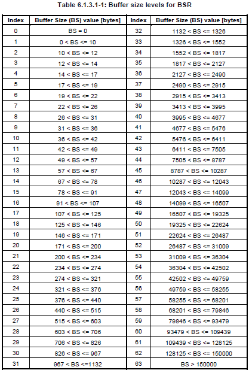
There are three BRS types according to the timing UE send BSR. Regular BSR, Periodic BSR, Padding BSR are these. Regular BSR is sent when a New data arrives in UL buffer and the new data has higher priority than the one already waiting in the buffer.
Periodic BSR is sent with the predefined periodicity. The periodicity is defined by Network and get informed to UE by RRC message (e.g, radioResourceConfigDedicated IE in RRC Connection Reconfiguration) as follows.
| +-mac-MainConfig ::= CHOICE [explicitValue] OPTIONAL:Exist
| | +-explicitValue ::= SEQUENCE [111]
| | +-ul-SCH-Config ::= SEQUENCE [11] OPTIONAL:Exist
| | | +-maxHARQ-Tx ::= ENUMERATED [n5] OPTIONAL:Exist
| | | +-periodicBSR-Timer ::= ENUMERATED [sf20] OPTIONAL:Exist
| | | +-retxBSR-Timer ::= ENUMERATED [sf320]
| | | +-ttiBundling ::= BOOLEAN [FALSE]
| | +-drx-Config ::= CHOICE [release] OPTIONAL:Exist
| | | +-release ::= NULL
| | +-timeAlignmentTimerDedicated ::= ENUMERATED [infinity]
| | +-phr-Config ::= CHOICE [setup] OPTIONAL:Exist
| | +-setup ::= SEQUENCE
| | +-periodicPHR-Timer ::= ENUMERATED [sf500]
| | +-prohibitPHR-Timer ::= ENUMERATED [sf200]
| | +-dl-PathlossChange ::= ENUMERATED [dB3]
Padding BSR is sent when the number of padding bits in a data message is larger than the size of BSR, so that the padding bit space can be used to send the BSR.

CCE Index is the CCE number at which the control channel data is allocated. Normally this index changes for each subframe, meaning that the control channel data allocated in each subframe changes subframe by subframe.
One of the most common situations where you have to care about this CCE index is when you change the system BW. Changing the system bandwidth in higher layer (L3) is very simple. You only have to change one IE in MIB, but if you are a protocol stack developer or test case developer who take care of all stack from L1 through L3, you have to calculate CCE index for each subframe and those index gets different for each bandwidth. But calculating CCE is not a simple procedure. Just outline of the calculation is as follows. Just try to have an idea on which parameters you need and how they are related to calculate CCE.
i) Prepare REG Table
ii) Select the system BW(=BW)
iii) Get the max number of RB for the BW (=N_RB)
iv) Select the Number of HI Group (=No_HI_Group)
v) Set the REG using CFI (REG_CFI = 4)
vi) Select the CFI (=CFI)
vii) Get Ng (=Ng)
viii) Create CFI vs BW table using Ng, REG_CFI, No_HI_Group (=CFI_BW_Table)
ix) Create HI_Group vs. BW table using Ng,N_RB (=HI_Group_BW_Table)
x) Get the element from HI_Group_BW_Table where BW and Ng cross.(=HI_Group)
xi) Get the element from CFI_BW_Table where CFI and BW cross(=N_CCE)
xii) Select CRNTI
xiii) Specify A,D,Y-1,Lx
iv) Calcuate Y0~Y9 from A,N_CCE,D
xv) Specify Aggregation Level(=L, where L = {1,2,4,8})
xvi) Calculate CCE Index from L,Y0~Y9,N_CCE
For further details of the procedure, refer to TS 36.213 - 9.1.1 PDCCH Assignment Procedure
CDD is a kind of transmit diversity mechanism implemented by applying a different phase delay (cyclic phase delay) for each OFDM subcarrier. CDD is applied differently for each transmission mode as shown in the following table.
|
TM type |
Number of Antenna |
CDD Type |
|
TM1 |
1 |
NO CDD |
|
TM2 |
2 |
NO CDD |
|
TM3 |
2 |
LARGE CDD |
|
TM4 |
2 |
NO CDD |
|
TM5 |
2 |
NO CDD |
|
TM6 |
2 |
NO CDD |
|
TM7 |
1 |
NO CDD |
What is the difference between NO CDD (without CDD) and LARGE CDD ? To be honest, I don't think I can explain it in easy way implying that even I don't have fully-detailed understanding on this. If I don't explain anything in plain term, it would imply I don't understand it clearly -:). You can refer to 36.211 section 6.3.4.2 Precoding for spatial multiplexing.
See Cell ID Detection and SIB Detection in LTE Basic Procedure page.
The term 'Cell Selection Criterion' may be a vague expression, since there can be many different criteria from many different perspective. But in most of the situation, Cell Selection Criterion means a specific signal quality criterion as descrbed in 36.304 as follows.
According to this criterion, UE would not start registration even though it sucessfully detected a cell and even decoded MIB and SIBs unless the Srxleve > 0 and Squal > 0. So if a device does not even initiate the PRACH process even when it successfully decoded all the MIB and SIBs, checking on this criteria would be a good first step for the troubleshooting. (Of course, this is not the only issues for this case. there may be USIM issue and Band Indicator Issue, PLMN issues etc).

Out of the variables used in the equation, only Qrxlevmeas and Qqualmeas is the value UE really measures when it turns on and most of other parameters are determined by a specific SIB (SIB1 in LTE case) or calculated by some other predefined values.
Following is the part of LTE SIB1 which is related to Cell Selection Criterion and Cell Selection Procedure. The red part is the ones directly related to Cell Selection Criterion and the blue part is the one related to overall Cell Selection Procedure.
+-c1 ::= CHOICE [systemInformationBlockType1]
+-systemInformationBlockType1 ::= SEQUENCE [000]
+-cellAccessRelatedInfo ::= SEQUENCE [0]
| +-plmn-IdentityList ::= SEQUENCE OF SIZE(1..6) [1]
| | +-PLMN-IdentityInfo ::= SEQUENCE
| | +-plmn-Identity ::= SEQUENCE [1]
| | | +-mcc ::= SEQUENCE OF SIZE(3) OPTIONAL:Exist
| | | | +-MCC-MNC-Digit ::= INTEGER (0..9) [0]
| | | | +-MCC-MNC-Digit ::= INTEGER (0..9) [0]
| | | | +-MCC-MNC-Digit ::= INTEGER (0..9) [1]
| | | +-mnc ::= SEQUENCE OF SIZE(2..3) [2]
| | | +-MCC-MNC-Digit ::= INTEGER (0..9) [0]
| | | +-MCC-MNC-Digit ::= INTEGER (0..9) [1]
| | +-cellReservedForOperatorUse ::= ENUMERATED [notReserved]
| +-trackingAreaCode ::= BIT STRING SIZE(16) [0000000000000001]
| +-cellIdentity ::= BIT STRING SIZE(28) [0000000000000000000100000000]
| +-cellBarred ::= ENUMERATED [notBarred]
| +-intraFreqReselection ::= ENUMERATED [notAllowed]
| +-csg-Indication ::= BOOLEAN [FALSE]
| +-csg-Identity ::= BIT STRING OPTIONAL:Omit
+-cellSelectionInfo ::= SEQUENCE [0]
| +-q-RxLevMin ::= INTEGER (-70..-22) [-53]
| +-q-RxLevMinOffset ::= INTEGER OPTIONAL:Omit
+-p-Max ::= INTEGER OPTIONAL:Omit
+-freqBandIndicator ::= INTEGER (1..64) [7]
Now you may have a couple of questions of q-RxLevMin. The first question of what kind of power this represents ? Is it RSSI or RSRP or RSRQ ? How the value of this IE maps to real power value (dBm) ? You can get the answers to these two questions at once from 36.331.
36.331 has a description as follows.
Q-RxLevMin
The IE Q-RxLevMin is used to indicate for cell re-selection the required minimum received RSRP level in the (EUTRA)
cell. Corresponds to parameter Qrxlevmin in 36.304 [4]. Actual value Qrxlevmin = IE value * 2 [dBm].
q-RxLevMinOffset
Parameter Qrxlevminoffset in 36.304 [4]. Actual value Qrxlevminoffset = IE value * 2 [dB]. If absent, apply the (default) value of 0 [dB] for Qrxlevminoffset. Affects the minimum required Rx level in the cell.
CFI (Confrol Format Indicator)
CFI is a indicator telling how many OFDM symbols are used for carrying PDCCH at each subframe. If CFI is set to be 1 for a subframe, it means one symbol (the first symbol) at the subframe is used for PDCCH allocation. If CFI is 2, it means two symbols (the first and the second symbol) are used for PDCCH. If CFI is 3, you know the answer -:)
This CFI is carried by a specific physical channel called PCFICH. PCFICH is carrying only CFI without any other information. You may ask "why do we need a special physical channel carrying only one number ?". It is because CFI is made up of 31 bits data even though the types of the bit pattern is only 4. The bit pattern and the CFI value mapping is as follows (3GPP 36.212 5.3.4 Control format indicator).
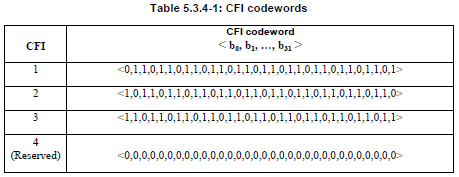
Channel Coding - DL SCH/PCH/MCH
See Channel Coding Process for DL SCH/PCH/MCS in LTE Basic Procedure page.
Simply put, the code rate can be defined as the ratio of the data rate that is allocated for a subframe and the maximum data rate that ideally can be allocated in the subframe. In other words, it means "The code rate is defined as the ratio between the transport block size and the total number of physical layer bits per subframe that are available for transmission of that transport block". A lower code rate means that more redundency bits are inserted during the channel coding process and a higher code rate means that less redundency bits are insterted.
When you have unrestricted resource to allocate for a certain UE, it would be happy. Even when you develop call processing protocol sequence to test UE, there may be times when you want to allocate a bare minimum resource for a certain data traffic. Then the issue is how to figure out the bare minimum resource for the traffic. If you allocate the resource less than the minimum value, the data would not get trasmitted or would not get decoded even though it got transmitted.
For this there is a guideline in 3GPP specification. TS36.213 7.1.7 Modulation order and transport block size determination and it says as follows.
The UE may skip decoding a transport block in an initial transmission if the effective channel code rate is higher than 0.930, where the effective channel code rate is defined as the number of downlink information bits (including CRC bits)divided by the number of physical channel bits on PDSCH. If the UE skips decoding, the physical layer indicates tohigher layer that the transport block is not successfully decoded. For the special subframe configurations 0 and 5 withnormal CP or configurations 0 and 4 with extended CP, shown in table 4.2-1 of TS 36.211: Evolved Universal Terrestrial Radio Access (E-UTRA); Physical channels andmodulation, there shall be no PDSCH transmissionin DwPTS of the special subframe.
Let's take an example with MCS = 8 and No of RBs = 3.
For this we have to get the two numbers based on specification quoted above.
(i) number of downlink information bits (including CRC bits )
(ii) number of physical channel bits
(i) refers to "(Transport Block Size + CRC bits)" which is the size of the message that gets channel coded.
(ii) refers to the number of available bits in the PHYSICAL LAYER. Each resource element(RE) can carry 2, 4, or 6 bits depending on the modulation scheme.We just have to count the number of REs reserved for PDSCH transmission on each subframe, and then multiply it by 2, 4, or 6 (accordint to modulation scheme) and then we will have the number of physical channel bits on PDSCH.
Getting back to our example condition MCS = 8 and No of RBs = 3. In this case,
for item (i), we can easily figure this out from TS36.213 Table7.1.7.1-1
for item (ii) we have
a) 3 x 12 REs/symbol
b) (14 symbols/subframe) x (3 x 12 REs/symbols) = 504 REs/subframe. Out of this 504 REs, we have to remove those REs allocated for PDCCH since it is not carrying the real data. Let's assume that 3 symbols/subframe are allocated for PDCCH. In this case, the number of REs for avaiable in PHY LAYER for data transmission is 504 - (3 x (3 x 12)) which is 396. Now we have to convert this number into "number of bits". In our sample case, the modulation scheme is QPSK which carries 2 bits per RE. Therefore, the value for item (ii) is 2 x 396 = 792. This assumes that the subframe does not carry PBCH, PSS, SSS. If it is the subframe that carries these signals, we have to remove the REs for PBCH, PSS, SSS as well.
Now we have the value (i) and (ii). If you take (i)/(ii), you will get the Code Rate.
I admit the explanation above would sound too complicated and messy. I asked on this to another expert on this area and he gave me much clearer explanation as follows :
The code rate is the result (consequence) of the combination of TBS, MCS, and N_RB we have chosen for the transmission. Effective channel code rate is defined as the number of downlink information bits (including CRC bits) divided by the number of physical channel bits on PDSCH
Let us take the caseMCS=8; ITBS=8, TBS=808; N_PRB=6
The number of downlink information bits =808+24 (CRC bits) = 832The number of physical channel bits on PDSCH = 6 (N_PRB)*12(no. of subcarriers in a PRB)*7(number of OFDM symbols in a slot)*2(no. of slots in a subframe)*2(number of bits per modulated symbols)=2016
Effective channel code rate = 832/2016 = 0.4127
Basically, the encoder is a fixed 1/3 code. The rate matching unit takes out different number of coded bits before transmission in the channel
Still now clear ? Don't worry, you are not the only one who get confused. I am also one of them.
I just found a useful source clips from LTE Protcol Conformance TTCN (MAC_717.ttcn). For many engineers, one source code would worth 1000 words.
function fl_CalculateCodingRate ( integer p_I_MCS,
integer p_N_PRB,
integer p_TBSize) return boolean
{
const integer tsc_REs_Per_PRB := 138; /* @sic R5s100155 sic@
* 12 * 12 - 6 [Cell specific reference symbols] total 8, and 2 in symbols 0]
* with DCI =2, symbols o and 1 are used for REGs */
var integer v_BitsPerSymbol;
var float v_CodingRate;
// initialise v_BitsPerSymbol
if (p_I_MCS < 10)
{
v_BitsPerSymbol := 2 ; //QPSK
}
else if (p_I_MCS < 17)
{
v_BitsPerSymbol := 4 ; //16QAM
}
else if (p_I_MCS < 29)
{
v_BitsPerSymbol := 6 ; //64QAM
}
else
{
FatalError(__FILE__, __LINE__, "invalid imcs");
}
v_CodingRate := (int2float(p_TBSize + 24)) / (int2float(p_N_PRB * tsc_REs_Per_PRB * v_BitsPerSymbol));
if ( v_CodingRate <= 0.930)
{
return true; // TB size applicable
}
else
{
return false; // Coding rate is high hence TB size is not applied
}
} // end of f_CalculateCodingRate
Data Transmission Process - Downlink
See Downlink Data Transmission Process in LTE Basic Procedure page.
DCI(Downlink Control Information)
Refer to DCI pages
In UMTS, we had a terminology called 'Combined Registration'. It means that UE simultaneously performs registration for CS network and PS network. LTE is bascially packet only (PS only). Then what is the purpose of this 'Combined Attach" ? What does it mean ?
It means that UE performs registration for LTE network and Non-LTE network (e.g, WCDMA or GSM) simultaneously.
Why do we need this kind of simultaneous registration for two different network ? It is mainly for CS-Fallback. Unless a system operator/UE use Voice Over IMS, we use legacy network (e.g, WCDMA, GSM, C2K) for voice call. In this case, UE has to go through the registration for the legacy network. The idea of Combined Attach is to perform the attach process for LTE and Legacy Network simultaneously.
This attach method is specified in Attach Request and Attach Accept as follows.
Attach request ::= DIVISION
+-Security header type ::= V
| +-Security header type ::= CHOICE [Plain NAS message, not security protected]
+-EPS mobility management protocol discriminator ::= V
| +-Protocol discriminator ::= PD [7]
+-Attach request message identity ::= V
| +-Message type ::= MSG [41]
+-NAS key set identifier ::= V
| +-TSC ::= CHOICE [native security context (for KSI ASME)]
| +-NAS key set identifier ::= CHOICE [possible values for the NAS key set identifier 1]
+-EPS attach type ::= V
| +-Spare ::= FIX [0]
| +-EPS attach type value ::= CHOICE [EPS attach]
UE send its attach type information in at EPS attach type value IE of Attach Request. This IE has two options as follows.
- EPS Attach
- Combined EPS/IMSI Attach
AS_LTE:EMM,Attach accept
Attach accept ::= DIVISION
+-Security header type ::= V
| +-Security header type ::= CHOICE [Plain NAS message, not security protected]
+-EPS mobility management protocol discriminator ::= V
| +-Protocol discriminator ::= PD [7]
+-Attach accept message identity ::= V
| +-Message type ::= MSG [42]
+-Spare half octet ::= V
| +-Spare half octet ::= FIX [0]
+-EPS attach result ::= V
| +-Spare ::= FIX [0]
| +-EPS attach result value ::= CHOICE [EPS only]
Network send the result of attach in at EPS attach result IE of Attach Accept. This IE has two options as follows.
- EPS Attach
- Combined EPS/IMSI Attach
CQI stands for Channel Quality Indicator. As the name implies, it is an indicator carrying the information on how good/bad the communication channel quality is. This CQI is for HSDPA. (LTE also has CQI for its own purpose).
CQI is the information that UE sends to the network and practically it implies the following two
i) Current Communication Channel Quality is this-and-that..
ii) I (UE) wants to get the data with this-and-that transport block size, which in turn can be directly converted into throughput
In HSDPA, the CQI value ranges from 0 ~ 30. 30 indicates the best channel quality and 0,1 indicates the poorest channel quality. Depending which value UE reports, network transmit data with different transport block size. If network gets high CQI value from UE, it transmit the data with larger transport block size and vice versa.
What if network sends a large transport block even though UE reports low CQI, it is highly probable that UE failed to decode it (cause CRC error on UE side) and UE send NACK to network and the network have to retransmit it which in turn cause waste of radio resources.
What if UE report high CQI even when the real channel quality is poor ? In this case, network would send a large transport block size according to the CQI value and it would become highly probable that UE failed to decode it (cause CRC error on UE side) and UE send NACK to network and the network have to retransmit it which in turn cause waste of radio resources.
How UE can measure CQI ? This is the most unclear topic to me. As far as I know, there is no explicit description in any standard on the mechanism by which the CQI is calculated, but it is pretty obvious that the following factors play important roles to CQI measurement.
- signal-to-noise ratio (SNR)
- signal-to-interference plus noise ratio (SINR)
- signal-to-noise plus distortion ratio (SNDR)
It is unclear how these factors are used and whether there is any other factors being involved. I was told the detailed CQI measurement algorithm is up UE implementation (chipset implementation).
In LTE, there are 15 different CQI values randing from 1 to 15 and mapping between CQI and modulcation scheme, transport block size is defined as follows (36.213)

If you are an engineer in Network (eNodeB) programming, you need to know the number of resource blocks and MCS for each CQI value to properly allocate the resources for each of UEs. With the modulation scheme in the table, you would get a certain range of MCS you can use for each CQI index. But you cannot pinpoint a specific MCS and Number of RBs. You need another condition to get the proper MCS and N RBs and it is 'Code Rate' shown in the table. But still there is not a single formula that would give you a single/determined value for MCS and NRB. You have to come up with a set of MCS and N RB that meet the modulation scheme and Code Rate requirement in the table. One example case can be as follows.
|
CQI |
Modulation |
Bits/Symbol |
REs/PRB |
N_RB |
MCS |
TBS |
Code Rate |
|
1 |
QPSK |
2 |
138 |
20 |
0 |
536 |
0.101449 |
|
2 |
QPSK |
2 |
138 |
20 |
0 |
536 |
0.101449 |
|
3 |
QPSK |
2 |
138 |
20 |
2 |
872 |
0.162319 |
|
4 |
QPSK |
2 |
138 |
20 |
5 |
1736 |
0.318841 |
|
5 |
QPSK |
2 |
138 |
20 |
7 |
2417 |
0.442210 |
|
6 |
QPSK |
2 |
138 |
20 |
9 |
3112 |
0.568116 |
|
7 |
16QAM |
4 |
138 |
20 |
12 |
4008 |
0.365217 |
|
8 |
16QAM |
4 |
138 |
20 |
14 |
5160 |
0.469565 |
|
9 |
16QAM |
4 |
138 |
20 |
16 |
6200 |
0.563768 |
|
10 |
64QAM |
6 |
138 |
20 |
20 |
7992 |
0.484058 |
|
11 |
64QAM |
6 |
138 |
20 |
23 |
9912 |
0.600000 |
|
12 |
64QAM |
6 |
138 |
20 |
25 |
11448 |
0.692754 |
|
13 |
64QAM |
6 |
138 |
20 |
27 |
12576 |
0.760870 |
|
14 |
64QAM |
6 |
138 |
20 |
28 |
14688 |
0.888406 |
|
15 |
64QAM |
6 |
138 |
20 |
28 |
14688 |
0.888406 |
Note 1 : Refer to Throughtput Calculation Example for determining N_RB, MCS, TBS determination.
Note 2 : REs/PRB varies depending on CFI value as follows.
|
CFI |
REs/PRB |
|
1 |
150 |
|
2 |
138 |
|
3 |
126 |
Note 3 : I used the following formula explained in Code Rate section.
v_CodingRate := (int2float(p_TBSize + 24)) / (int2float(p_N_PRB * tsc_REs_Per_PRB * v_BitsPerSymbol));
CQI is carried by PUCCH or PUSCH depending on the situation as follows.
- Carried by PUCCH : When there is no uplink data to be transmitted
- Carried by PUSCH : When there is uplink data to be transmitted.
Regarding CQI report period and configuration, refer to CQI, PMI, RI Reporting Configuration part.
CQI, PMI, RI Reporting Configuration
When (on which subframe, with what interval) the CQI is transmitted ? There are two types of CQI transmission : Periodic and Aperiodic.
- Periodic CQI : CQI is transmitted periodically with a certain interval specified by higher layer message(e.g, RRC Connection Reconfiguration, RRC Connection Setup).
- Aperiodic CQI : CQI is transmitted by a special trigger (e.g, DCI0, RACH Response).
Let's look into Periodic Report first. As mentioned above, in Periodic report configuration CQI/PMI/RI is transmitted periodically with a certain interval specified by higher layer message(e.g, RRC Connection Reconfiguration, RRC Connection Setup)
Following RRC configuration (RRC Connection Setup or RRC Connection Reconfiguration) notifies UE of CQI, PMI, RI reporting configuration.

But just from RRC message and the two tables (from 36.213), you cannot know exactly at which subframe the CQI/PMI/RI are transmitted. To figure out the exact time stamp (SFN and subframe) you have to go through several mathematical equations as follows. These two equations are only part of the story. You have to refer to 36.213 7.2.2 Periodic CSI Reporting using PUCCH. You will see the many different cases of reporting cycle. I just use this two example to show you how to interpret these equation.
Following is an example when CQI only is being transmitted. Npd and N_OFFSET,CQI configured by RRC Connection Setup and RRC Connection Reconfiguration and the value itself came from Table 7.2.2-1A of 36.213.
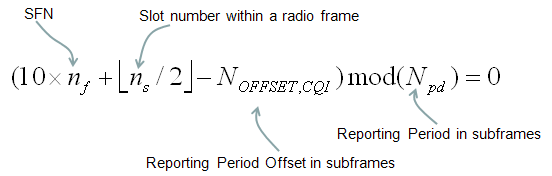
The equation itself will be quite simple, but just to doublecheck your understanding, let me give you a short quizz (don't get panic -:)). Here you go.
If cqi-pmi-Configindex in RRC message is 13. What is Npd and N_OFFSET,CQI ?
This maps to the row of the table as follows. You can read Npd directly. It is 10. Then you need a little bit of math to get N_OFFSET,CQI. The value for this example is specified to be (I_CQI/PMI-7). It is 13-7 which is 6. Now the last step is to apply these two values to the equation above to calculate the exact subframe number for CQI/PMI transmission.
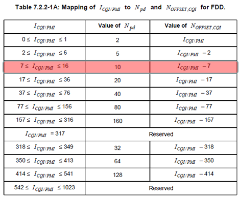
Following is an example where both CQI and RI are being transmitted.

just to doublecheck your understanding, let me give you a short quizz. Here you go.
If ri-Configindex in RRC message is 200. What is M_RI and N_OFFSET,RI ?
This maps to the row of the table as follows. You can read M_RI directly. It is 2. Then you need a little bit of math to get N_OFFSET,RI. The value for this example is specified to be -(I_RI-161). It is -(200-161) which is -39. Now the last step is to apply these two values to the equation above to calculate the exact subframe number for RI transmission.

I will put the details later.
cqi-ReportModeAperiodic is defined by the following table (36.213).
cqi-PUCCH-ResourceIndex is "Resource index for PUCCH formats 2/2a/2b".
cqi-FormatIndicatorPeriodic is determined by the following table (36.213)
Basically LTE is a Packet only technology. It is well designed for data traffic. Then what about Voice call ? This has normally done via CS call in existing technology (WCDMA, GSM, C2K etc). There can be a couple of options to achieve voice call in LTE. One of the option is just to use packet based voice call (e.g, VoIP or IMS). Another option is to use multiple technology. For example, if UE wants to have packet communication, the network redirect it to the normal LTE core network and if UE wants to do voice call the network redirect the call to one of the existing technology like WCDMA, GSM or C2K. This technology that enables to redirect connection to other technology (e.g, WCDMA, GSM, C2K) is called 'CS Fallback'.
It may sound very simple and usefull... but it is not that simple as you think. First, UE should support multiple technologies and network side would be even more complicated. One of the simplest representation on network side would be as follows. As you may guess, there should be some link point between LTE network and 2G/3G network to make this CS fallback happen. In this case, the connection point is between MSC and MME and the interface connecting these two entities are called 'SG' interface.

Now LTE and 2G/3G network is connected. Now let's look into the interplay of the two networks to make the voice call possible. I think these interplay can be explained by adding just three lines as follows.
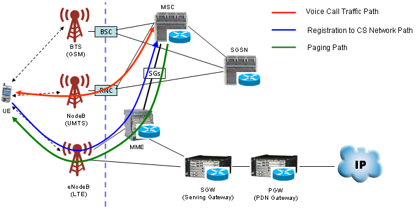
Is this everything make CS Fallback happen ? Definately not. There is some difference in terms of signaling protocol between LTE and 2G/3G. To make these two different protocol work together would not be that simple. To make this happen, LTE network should have a certain level of understanding (compatibility) with 2G/3G protocol and 2G/3G network shouldhave a certain level of understanding LTE protocol.
It is not the scope of this short section to describe the whole details of 'CS Fallback' protocol side. So just keep it mind that it would be pretty complicated process and try to google some of articles.
If you are interested in any practical example of CsFB to the level of RRC/NAS message, refer to CSFB (LTE-->WCDMA) section of Handover page.
One thing I would like to recomment is
There are several different ways to implement CsFb (CS Fallback) and one of the most common way is to use 'Redirection' method. For the details of 'Redirection' mechanism, refer to 'Redirection' section.
See Decoding Uplink Signal in LTE Basic Procedure page.
DMRS stands for 'DeModulation Reference Signal'. As the name stands for, this is a reference signal for PUCCH implying that eNodeB would not be able to decode PUCCH if this PUCCH DMRS is bad.
The location (Symbol Number) of PUCCH DMRS location varies depending on PUCCH type as shown below.
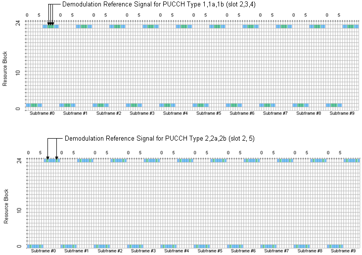
PUCCH DMRS is also a kind of Zadoff Chu sequence and it would not look very complicated if you see the sequence in I/Q constellation, but generation of this sequence is very complicated as follows.
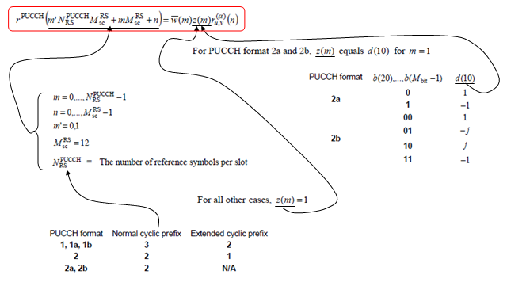


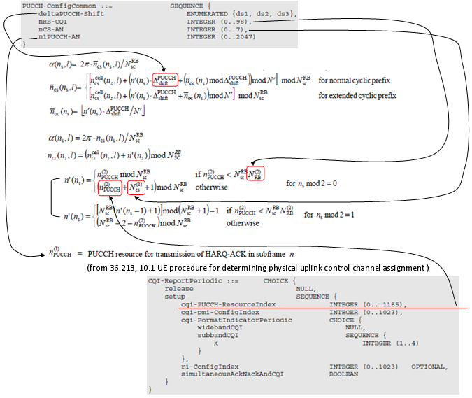
DMRS stands for 'DeModulation Reference Signal'. As the name stands for, this is a reference signal for PUSCH implying that eNodeB would not be able to decode PUSCH if this PUSCH DMRS is bad.
For how (at which steps of PUSCH decoding process) this signal is used, refer to 'Decoding Uplink Signal'.
PUSCH DMRS always takes up the center symbol of a slot (meaning symbol 3 and symbol 10 of a UL subframe). Following is an example of UL transmission showing PUSCH data, PUSCH DMRS and UL SRS.

Understanding the location of PUSCH DMRS is simple, but generating the DMRS is not that simple. Big picture is simple since PUSCH DMRS is also a kind of Zadoff - Chu Sequence. But there are so many parameters being used to create a specific Zadoff-Chu sequence for a specific case. Following is the chain of algorithms from 36.211 section 5.5 Reference signals. It would be hard to grasp the meaning of each parameters unless you implement this algorithm on your own, but just taking a brief look-at of these equations would give you the idea on what kind of factors are involved in this sequence generation.

If you go through the 36.211 5.5.2 Demodulation reference signal, you will notice that some of the parameters should come from the higher layer signaling message. Following illustration show you how the higher layer parameter is getting involved in the reference signal sequence generation.
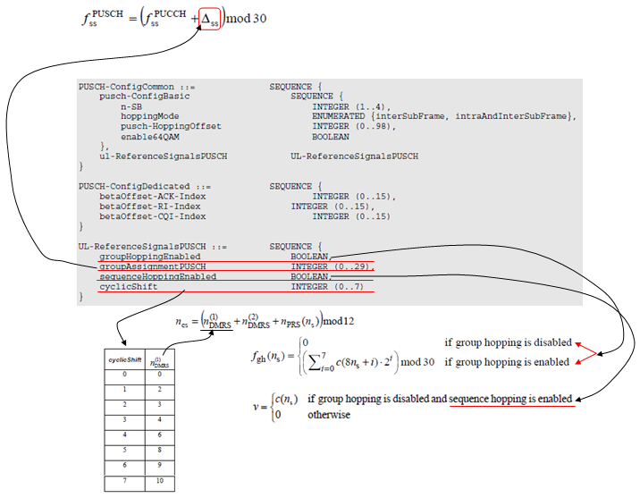
If you look into the downlink signal, you would notice that it is made up of many different components. For example, Reference Signal, PDCCH, PDSCH etc.
Then you would have a question saying "How do we allocate power to each of the those channels ?". The simplest way for our understanding would be to allocate the same power to all of the these channels, but this would be only for the sake of our understanding.
For decoding any downlink data, the first step is to detect/decode reference signal. If the power of this reference signal is same as all other channel power, it would not be easy (though not impossible) to detect it. So more practical implementation is to make Reference Signal outstanding comparing to other channels as shown in the red bar in the following plot (you see a certain degree of offset, P_A between Reference Signal and other channel power).
However there is a complication with this method and it is because the reference channels occurs only in specific symbols, not in every symbols. It means that there are some symbols with reference signal in it and there are some other symbols without reference signal in it. It implies, if you measure the power of each symbol, some symbol (symbol with reference signal) has higher power than the other symbols (symbol without reference signal). This would cause some complication on the implementation of reciever equalizer.
To solve this problem of power difference between two groups of symbols, we can put lesser power to the non-reference signal channels at the symbol carrying reference signal. Due to this, you see another type of offset P_B in the plot shown below.
Combining all of these factors, we have pretty complicate peak-and-valley type of power terrain rather than the flat plain terrain in downlink power allocation.

Power offset between PDSCH channel in the symbols with reference signal and PDSCH channel in the symbols without reference signal (P_B) is specified in SIB2 as follows.
+-sib-TypeAndInfo ::= SEQUENCE OF SIZE(1..maxSIB[32]) [1]
| +- ::= CHOICE [sib2]
| +-sib2 ::= SEQUENCE [00]
| +-ac-BarringInfo ::= SEQUENCE OPTIONAL:Omit
| +-radioResourceConfigCommon ::= SEQUENCE
| | +-rach-Config ::= SEQUENCE
| | +-bcch-Config ::= SEQUENCE
| | +-pcch-Config ::= SEQUENCE
| | +-prach-Config ::= SEQUENCE
| | +-pdsch-Config ::= SEQUENCE
| | | +-referenceSignalPower ::= INTEGER (-60..50) [18]
| | | +-p-b ::= INTEGER (0..3) [0]
Power offset between the Reference Signal and PDSCH channel in the symbols without reference signal (P_A) is specified in RRC Connection Setup as follows. P_A is UE specific power offset. This is why this is specified by RRC Connection Setup message.
+-c1 ::= CHOICE [rrcConnectionSetup-r8]
+-rrcConnectionSetup-r8 ::= SEQUENCE [0]
+-radioResourceConfigDedicated ::= SEQUENCE [100101]
| +-srb-ToAddModList ::= SEQUENCE OF SIZE(1..2) [1] OPTIONAL:Exist
| +-drb-ToAddModList ::= SEQUENCE OF OPTIONAL:Omit
| +-drb-ToReleaseList ::= SEQUENCE OF OPTIONAL:Omit
| +-mac-MainConfig ::= CHOICE [explicitValue] OPTIONAL:Exist
| +-sps-Config ::= SEQUENCE OPTIONAL:Omit
| +-physicalConfigDedicated ::= SEQUENCE [1111001011] OPTIONAL:Exist
| +-pdsch-ConfigDedicated ::= SEQUENCE OPTIONAL:Exist
| | +-p-a ::= ENUMERATED [dB-3]
| +-pucch-ConfigDedicated ::= SEQUENCE [0] OPTIONAL:Exist
| +-pusch-ConfigDedicated ::= SEQUENCE OPTIONAL:Exist
| +-uplinkPowerControlDedicated ::= SEQUENCE [1] OPTIONAL:Exist
| +-tpc-PDCCH-ConfigPUCCH ::= CHOICE OPTIONAL:Omit
| +-tpc-PDCCH-ConfigPUSCH ::= CHOICE OPTIONAL:Omit
| +-cqi-ReportConfig ::= SEQUENCE [10] OPTIONAL:Exist
| +-soundingRS-UL-ConfigDedicated ::= CHOICE OPTIONAL:Omit
| +-antennaInfo ::= CHOICE [defaultValue] OPTIONAL:Exist
| +-schedulingRequestConfig ::= CHOICE [setup] OPTIONAL:Exist
+-nonCriticalExtension ::= SEQUENCE OPTIONAL:Omit
For further details, refer to 36.213 5.2 Downlink power allocation
Even while there is no traffic between the network and UE, UE has to keep listening to Network. At least it should be ready to decode PDCCH. It means UE has to be "ON" all the time even when there is no traffic. But being ON all the time would drain the battery.
You may ask "Then why don't UE shut down (getting into a sleep mode) when there is no traffic ?". Sounds good, but what if Network tries to send some data to UE while the UE is in the sleep mode ?
Then what would be the ideal solution for this ? what is the ideal solution to save battery consumption and still does not lose chance of receiving the data that Network sent to UE ?
One of the solution for this is let UE get into sleeping mode for a certain period of time and wake up again checking if there is any data coming from the network and getting into sleeping mode again if there is no data and wake up again... repeaing this cycles. This kind of periodic repeatition of "sleep mode and wake up mode" is called DRX (Discontinous Reception".
Does it sound simple ? It may.. but in reality implemting DRX may not be as simple as you may expected because there should be well designed synchronization between UE and Network. In worst case, Network tries to send some data while UE is in sleep mode and UE tries to wake up when there is no data to be recieved. To prevent this kind of worst case scenario, UE and Network has a well defined agreement about when UE has to be in sleep mode and when UE has to wake up. This agreement is defined in 3GPP TS36.321 Section 5.7 for connected mode, and TS36.304
Section 7.1 for idle mode.
For further details, refer to DRX (Discontinous Reception) in MAC layer description. (Very strong recommandation to refer to this section)
EEA(EPS Encryption Algorithms)
Simply put, this is a Ciphering Algorithm. and Ciphering can be aplied to both U-Plane Data and C-Plane Data (RRC/NAS Message). The type of EEA being used is determined by Network and informed to UE via Security Mode Command. NAS EEA is carried by NAS:Security Mode Command and RRC EEA is carried by RRC:Security Mode Command.
NAS_LTE:EMM,Security mode command
Security mode command ::= DIVISION
+-Security header type ::= V
| +-Security header type ::= CHOICE [Plain NAS message, not security protected]
+-EPS mobility management protocol discriminator ::= V
| +-Protocol discriminator ::= PD [7]
+-Security mode command message identity ::= V
| +-Message type ::= MSG [5D]
+-Selected NAS security algorithms ::= V
| +-Octet1 ::= DIVISION
| +-spare ::= FIX [0]
| +-Type of ciphering algorithm ::= CHOICE [EPS encryption algorithm EEA0(ciphering not used)]
| +-spare ::= FIX [0]
| +-Type of integrity protection algorithm ::= CHOICE [Reserved 0]
+-Spare half octet ::= V
| +-Spare half octet ::= FIX [0]
+-NAS key set identifier ::= V
| +-TSC ::= CHOICE [native security context (for KSI ASME)]
| +-NAS key set identifier ::= CHOICE [possible values for the NAS key set identifier 0]
+-Replayed UE security capabilities ::= LV
| +-Octet1 ::= DIVISION
| | +-Length of UE security capability contents ::= LEN (0..255) [5]
+-c1 ::= CHOICE [securityModeCommand]
+-securityModeCommand ::= SEQUENCE
+-rrc-TransactionIdentifier ::= INTEGER (0..3) [0]
+-criticalExtensions ::= CHOICE [c1]
+-c1 ::= CHOICE [securityModeCommand-r8]
+-securityModeCommand-r8 ::= SEQUENCE [0]
+-securityConfigSMC ::= SEQUENCE
| +-securityAlgorithmConfig ::= SEQUENCE
| +-cipheringAlgorithm ::= ENUMERATED [eea0]
| +-integrityProtAlgorithm ::= ENUMERATED [spare1]
+-nonCriticalExtension ::= SEQUENCE OPTIONAL:Omit
Currently there are three different types of EEA we can use as shown in the following table.
|
Identifier |
Type |
Description |
|
0000 |
128-EEA0 |
Null ciphering algorithm |
|
0001 |
128-EEA1 |
SNOW 3G |
|
0010 |
128-EEA2 |
AES |
As the term implies, this is "Integrity Algorithm" being used in LTE. This algorithm applies only to C-Plane data (NAS mesage). You can take this as a kind of special encryption algorithm which is used only for NAS message. Like EEA, this is also determined by the Network and informed to UE by EMM:Security Mode Command and RRC : Security Mode Command message.
NAS_LTE:EMM,Security mode command
Security mode command ::= DIVISION
+-Security header type ::= V
| +-Security header type ::= CHOICE [Plain NAS message, not security protected]
+-EPS mobility management protocol discriminator ::= V
| +-Protocol discriminator ::= PD [7]
+-Security mode command message identity ::= V
| +-Message type ::= MSG [5D]
+-Selected NAS security algorithms ::= V
| +-Octet1 ::= DIVISION
| +-spare ::= FIX [0]
| +-Type of ciphering algorithm ::= CHOICE [EPS encryption algorithm EEA0(ciphering not used)]
| +-spare ::= FIX [0]
| +-Type of integrity protection algorithm ::= CHOICE [Reserved 0]
+-Spare half octet ::= V
| +-Spare half octet ::= FIX [0]
+-NAS key set identifier ::= V
| +-TSC ::= CHOICE [native security context (for KSI ASME)]
| +-NAS key set identifier ::= CHOICE [possible values for the NAS key set identifier 0]
+-Replayed UE security capabilities ::= LV
| +-Octet1 ::= DIVISION
| | +-Length of UE security capability contents ::= LEN (0..255) [5]
+-c1 ::= CHOICE [securityModeCommand]
+-securityModeCommand ::= SEQUENCE
+-rrc-TransactionIdentifier ::= INTEGER (0..3) [0]
+-criticalExtensions ::= CHOICE [c1]
+-c1 ::= CHOICE [securityModeCommand-r8]
+-securityModeCommand-r8 ::= SEQUENCE [0]
+-securityConfigSMC ::= SEQUENCE
| +-securityAlgorithmConfig ::= SEQUENCE
| +-cipheringAlgorithm ::= ENUMERATED [eea0]
| +-integrityProtAlgorithm ::= ENUMERATED [spare1]
+-nonCriticalExtension ::= SEQUENCE OPTIONAL:Omit
Currently there are two different types of EIA we can use as shown in the following table.
|
Identifier |
Type |
Description |
|
0000 |
128-EIA0 |
Null Integrity algorithm |
|
0001 |
128-EIA1 |
SNOW 3G |
|
0010 |
128-EIA2 |
AES |
Actually EIA0 is not officially defined because integrity protection is mandatory for RRC (AS) and NAS signalling messages, but in some special condition (e.g, in UE testing environment), Null Integrity is used. Even in this case, NAS message carries Integrity Header, but the MAC (Message Authentication Code) part of the header is all set to be 0.
'Bearer' in the dictionary means "Carrier" or "Porter" which carries something from a point to another point. Under the context of communication technology, I would define the 'Bearer' as a 'pipe line' connecting two or more points in the communication system in which data traffic follow through.
Taking this definition, we can define 'EPS Bearer' as a pipe line through which data traffic flows within EPS (Evolved Packet switched System).
EPS Bearer can be illustrated as the Red path in the following illustration.

As shown above, EPS bearer has several components in it. It means EPS beare is a complex of multiple element bearers as in the following diagram.

It would seem to be a simple diagram, but as you see EPS bearer includes all the components from Radio Link to the final packet core. It means understanding EPS bearer means understanding the whole LTE network.
I would leave it up to you to study the very details of each component.
If you have any experience or knowledge on the other technology like WCDMA, you can think of EPS Bearer as an entity similar to WCDMA PS Bearer.
If you see the diagram shown above, you would notice that this bearer has two main part. One is 'Radio Bearer' and the other part is Core network bearer.
In UMTS case, the 'Radio Bearer' part is configured by 'Radio Bearer Setup' message and the Core Network Bearer is configured by Activate PDP Context procedure .
In LTE, the both 'Radio Bearer' part and 'Core Network Bearer' both configured by a single message, 'RRC Connection Reconfiguration'. Actually within 'RRC Connection Reconfiguration' message there is one part for Radio configuration and another part for Core Network configuration. See the following two links for the details.
- RRC : RRC Connection Reconfiguration + NAS : Attach Accept + NAS : Activate Default EPS Bearer Context Req
- RRC : RRC Connection Reconfiguration + NAS : Activate Dedicated EPS Bearer Context Request
There are two types of EPS Bearer. One is 'Default EPS Bearer' and the other one is 'Dedicated EPS Bearer'. Simply put, we can describe as follows.
i) Default EPS Bearer :
- Be established during Attach Process
- Allocate IP address to UE
- Does not have specifc QoS (only Nominal QoS is applied).
- Similar to Primary PDP Context in UMTS
ii) Dedicated EPS Bearer
- Normally be established during the call setup after idle mode. (but can be established during the attach as well).
- Does not allocate any additional IP address to UE
- Is linked to a specified default EPS bearer
- Have a specific (usually guaranteed) QoS
- Similar to Secondary PDP Context in UMTS
ETWS (Earthquake and Tsunami Warning System)
ETWS is a kind of public warning system (PWS) to notify all the UEs in a specific area of emergency situation like Earthquake or Tsunami. The concept is very similar to Cell Broadcasting in WCDMA and GSM network.
In WCDMA, we used a special channel called CTCH (Common Traffic Channel) for this purpose, but in LTE we use a couple of SIB messages to periodically broadcast the warning information to all the UEs in a certain area simultaneouly. (I personally prefer this method than using CTCH). The SIBs that carry the information about ETWS is SIB10 and SIB11.
When an emergency situation happens, network broadcast the details of the emergency via SIB 10/SIB11 and inform UE to let decode SIB10/11 by sending special Paging message. When UE recieves this Paging message, UE has to decode SIB10/11 and display the warning information on the screen.
In LTE, there are three main components getting involved in sending ETWS as follows.
i) Paging : ETWS Notification.
ii) SIB 10 : Secondary Notification
iii) SIB 11 : Primary Notification
Overall message flow for LTE ETWS from NTT DoCoMo Technology Report is as follows.

Following is Paging, SIB10, SIB11 showing the field (IEs) related to ETWS. (For the details of ETWS, refer to 3GPP TS23.828 and TS22.268 and TS 36.523 section14 ETWS)
RRC_LTE:PCCH-Message
PCCH-Message ::= SEQUENCE
+-message ::= CHOICE [c1]
+-c1 ::= CHOICE [paging]
+-paging ::= SEQUENCE [0110]
+-pagingRecordList ::= SEQUENCE OF OPTIONAL:Omit
+-systemInfoModification ::= ENUMERATED [true] OPTIONAL:Exist
+-etws-Indication ::= ENUMERATED [true] OPTIONAL:Exist
+-nonCriticalExtension ::= SEQUENCE OPTIONAL:Omit
RRC_LTE:BCCH-DL-SCH-Message
BCCH-DL-SCH-Message ::= SEQUENCE
+-message ::= CHOICE [c1]
+-c1 ::= CHOICE [systemInformation]
+-systemInformation ::= SEQUENCE
+-criticalExtensions ::= CHOICE [systemInformation-r8]
+-systemInformation-r8 ::= SEQUENCE [0]
+-sib-TypeAndInfo ::= SEQUENCE OF SIZE(1..maxSIB[32]) [1]
| +- ::= CHOICE [sib10]
| +-sib10 ::= SEQUENCE [1]
| +-messageIdentifier ::= BIT STRING SIZE(16) [0000000000000000]
| +-serialNumber ::= BIT STRING SIZE(16) [0000000000000000]
| +-warningType ::= OCTET STRING SIZE(2) [0000]
| +-warningSecurityInfo ::= OCTET STRING SIZE(50) [0000000000000000000000000000
0000000000000000000000000000
0000000000000000000000000000
0000000000000000] OPTIONAL:Exist
+-nonCriticalExtension ::= SEQUENCE OPTIONAL:Omit
RRC_LTE:BCCH-DL-SCH-Message
BCCH-DL-SCH-Message ::= SEQUENCE
+-message ::= CHOICE [c1]
+-c1 ::= CHOICE [systemInformation]
+-systemInformation ::= SEQUENCE
+-criticalExtensions ::= CHOICE [systemInformation-r8]
+-systemInformation-r8 ::= SEQUENCE [0]
+-sib-TypeAndInfo ::= SEQUENCE OF SIZE(1..maxSIB[32]) [1]
| +- ::= CHOICE [sib11]
| +-sib11 ::= SEQUENCE [1]
| +-messageIdentifier ::= BIT STRING SIZE(16) [0000000000000000]
| +-serialNumber ::= BIT STRING SIZE(16) [0000000000000000]
| +-warningMessageSegmentType ::= ENUMERATED [notLastSegment]
| +-warningMessageSegmentNumber ::= INTEGER (0..63) [0]
| +-warningMessageSegment ::= OCTET STRING SIZE(ALIGNED)
| +-dataCodingScheme ::= OCTET STRING SIZE(1) [00] OPTIONAL:Exist
+-nonCriticalExtension ::= SEQUENCE OPTIONAL:Omit
You can find the defailed description of each of these information elements in the following specification. (Refer to 36.331 for framework specification).
- sib10.messageIdentifier : 23.041-9.4.1.2.2 Message Identifier
- sib10.serialNumber : 23.041-9.4.1.2.1 Serial Number
- sib10.warningType : 23.041-9.3.24 Warning-Type
- sib10.warningSecurityInfo : 23.041-9.3.25 Warning-Security-Information
- sib11.messageIdentifier : 23.041-9.4.1.2.2 Message Identifier
- sib11.serialNumber : 23.041-9.4.1.2.1 Serial Number
- sib11.swarningMessageSegment : 23.041-9.4.2.2.5 CB Data
EUTRA Band and Channel Bandwidth
In most of the wireless communication environement, a signal out of a transmitter radiate into wide direction and these radiated signal takes different path and arriving at the reciever at different timing and with different signal strength(amplitude). As a result, the signal coming into the reciever is the composite of all the components. As you may learned in high school physics, when the two copies of the signal get combined the resulting signal can be an augmented signal or attenuated signal depending on whether the two signal constructively combined or destructively combined.
Then what determines whether the signals constructively combine or destructively combine ? The answer also come from high school physics. The phase of the two signal determines whether the signal constructively combine or destructively combine.
In wireless communication environment, many copies of the signals get combined at the reciever side and some of them constructively combines and some of them destructively combines. So final result of combination of all the incoming signals become very complicated and the combined signal becomes drastically different from the original signal tranmitted from the source. In most case, the quality of the combined signal at the reciever gets poorer (deteriorated) than the original signal. This kind of process of signal deterioration by the multiple propogation path of a signal is called 'Fading'. When we say "Fading", it usually implies "Signal quality gets bad".

For more intuitive unerstanding of the fading, I will show you a couple of different aspect of fading you can mesure using various equipments.
First, let's compare a faded signal and non-faded signal using a spectrum analyzer. You would get the two results as follows and you will see the highly fluctuating amplitude across the channel bandwidth. (Note : These two capture are not the one from the same signal, so comparing the absolute value of the amplitude does not many any sense. Just take the image of overall amplitude profile).
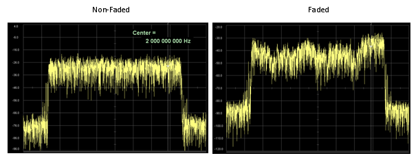
Now let's look at how the fading influence the signal quality decoded by the reciever. Look at the following samples of constellation for faded and non-faded signal.

Now let's get into even further and I think this is the thing that you would be most interested in. How this fading would influence the final performance. Following graph shows the data rate at PHY layer and PDCP layer. The plot showing at the top (labeled as 'PHY Transmission Rate') is the amount of data being transmitted per second by PHY layer of the transmitter. The plot in the middle (labeled as 'PHY throughput with HARQ ACK' is the amount of data getting ACKED per second from the reiever PHY layer. You see there is pretty much gap between the two plots. It means that a considerable portions of the data were failed to get properly decoded by the reciever and the reciever sent NACK for the data. Normally in this case, the transmitter PHY layer retransmits the previous data rather than moving into the next step of the transmission.
The plot at the bottom (labelled as 'PDCP Transmission Rate') is the amount of data being sent to the lower layer from the transmitter's PDCP layer. You will see another gap here. It is not easy to explain exactly what is causing this gap. In this case, some portions of the gap would come from the overhead of higher layer data structure but majority of the gap would be because PDCP cannot push the data down to the lower layer since PHY layer is too busy with retransmitting the previous data rather than transmitting the new data coming from the higher layer.

Typical model for Fading channel can be described by a simple diagram as follows. This is very simplified model but fortunately this is almost enough for 3GPP specification for fading test. As you see, a signal comes into the fading block and splits into multiple path. Each path has three components, namely Delay, PDF, Gain component. By changing these parameters in each path, you can construct pretty complicated fading channel.
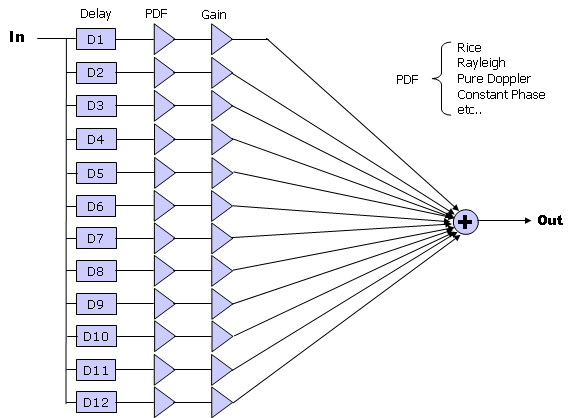
In LTE 3GPP specification, typical three types of Fading profiles are defined as follows.

In addition to this delay, gain, PDF, we have to think about the correlations among all the antenna on transmitter and reciever side as follows.

These correlation is defined in 3GPP as shown below and this correlation matrix should be applied to the Fading model when we use multiple antenna configuration.
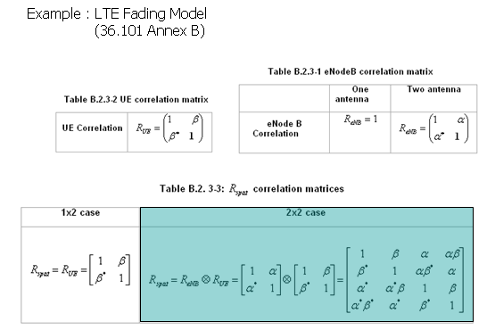
See Frequency Aquisition in Basic Procedure page
Everybody would know what the frequency hopping is ? It is a special transmission technique sending data with changing crarrier frequency in a certain pattern. Same definition applies to LTE frequency hopping as well.
So I will talk more on why we need freuqency and what kind of hopping pattern it use. One think to be noticed is that LTE use frequency hopping only for Uplink.
Following is the illustration of a uplink frame. I allocated a resource for a user at a portion of the operation band and the location does not changes throughout the frame.

With a bad luck, what if some impairment happens at the specific frequency region as shown below that the data is carried. In this case, the data for the poor user will be currupted so badly.

How can we avoid this kind of issue ? There is no perfect solution for this, but there may be many partial solutions for this. Frequency hopping can be one of those partial solutions. If the frequency (basically Start RB of the data) changes, large portions of the data would be able to avoid the impairment even thopugh there still be some unlucky data hit by the noise.
Now let's think of what kind of hopping pattern (method) is used in LTE.
First we can think of a pattern as follows. As you see, frequency change (hopping) does not happens within a subframe. It happens only between a subframe and another subframe. This kind of hopping is called "inter subframe" hopping. Another characteristics you may notice from the following figure would be that the hopping pattern is simple and does not change.

Next pattern we can think of is as follows. Do you recognize the difference between the previous one and this one ? You would notice that hopping happens within a subframe in this case. This kind of hopping is called 'Intra Subframe' hopping.

Now let's look into another type of hopping. Now you may recognize this is a kind of IntraSubframe hopping as in previous pattern, but you would see that hopping distance between the one slot and another slot is not constant. It may look as if the distance is arbitrary.(It is not totally random, but it would LOOK Like a random)

Now let's look at another types of pattern. Did you recognize the difference from the previous one ? You would notice that the resource allocation gets flipped around as it hops from the previous one. The resource allocation of a slot is a mirror image of the previous one. This is called "mirroring".
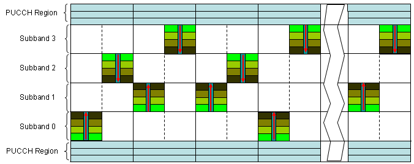
I just tried to give you some intuitive understanding of the UL frequency hopping. For exact hopping rules/patterns, refer to 36.211 - 5.3.4
How would the eNodeB in what pattern the UL data would hop ? It is simple. Network determine all the hopping patterns and let UE hop as it instructs.
Network informs UE of the details of hopping pattern via SIB2 and DCI 0 as follows.
+-sib2 ::= SEQUENCE [00]
+-ac-BarringInfo ::= SEQUENCE OPTIONAL:Omit
+-radioResourceConfigCommon ::= SEQUENCE
| +-rach-Config ::= SEQUENCE
| +-bcch-Config ::= SEQUENCE
| +-pcch-Config ::= SEQUENCE
| +-prach-Config ::= SEQUENCE
| +-pdsch-Config ::= SEQUENCE
| +-pusch-Config ::= SEQUENCE
| | +-pusch-ConfigBasic ::= SEQUENCE
| | | +-n-SB ::= INTEGER (1..4) [1]
| | | +-hoppingMode ::= ENUMERATED [interSubFrame]
| | | +-pusch-HoppingOffset ::= INTEGER (0..98) [4]
| | | +-enable64QAM ::= BOOLEAN [FALSE]
| | +-ul-ReferenceSignalsPUSCH ::= SEQUENCE
| | +-groupHoppingEnabled ::= BOOLEAN [TRUE]
| | +-groupAssignmentPUSCH ::= INTEGER (0..29) [0]
| | +-sequenceHoppingEnabled ::= BOOLEAN [FALSE]
| | +-cyclicShift ::= INTEGER (0..7) [0]

There are two different types of hopping and the Hopping Bit field (NUL-hop) in DCI 0 specify which hopping type should be applied. The mapping between Hopping Bit Value and Hopping Type is as follows.
|
System BW |
Hopping Bit Field |
Hopping Type |
|
1.4, 3, 5 |
0 |
Type 1 |
|
1 |
Type 2 |
|
|
10, 15, 20 |
0 |
Type 1 |
|
1 |
Type 1 |
|
|
2 |
Type 1 |
|
|
3 |
Type 2 |
Type 1 : Frequency offset between the first slot and the second slot is explicitely determined by DCI 0.
Type 2 : Frequency offset between the first slot and the second slot is configured by a predefined pattern. When there is multiple subbands, hopping is done from one subband to another subband.
Following four screenshot is an example of PUSCH Frequence Hopping with a commercialized device.
Following is the result of
System BW = 10 Mhz
n_SB = 1
hoppingMode = IntraInterSubframe
pusch-HoppingOffset = 4
Hopping bit value in DCI 0 = 0 (Type 1)

Following is the result of
System BW = 10 Mhz
n_SB = 1
hoppingMode = IntraInterSubframe
pusch-HoppingOffset = 4
Hopping bit value in DCI 0 = 1 (Type 1)
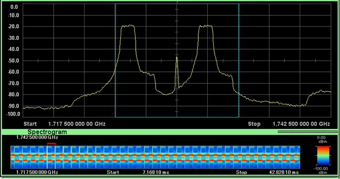
Following is the result of
System BW = 10 Mhz
n_SB = 1
hoppingMode = IntraInterSubframe
pusch-HoppingOffset = 4
Hopping bit value in DCI 0 = 2 (Type 1)
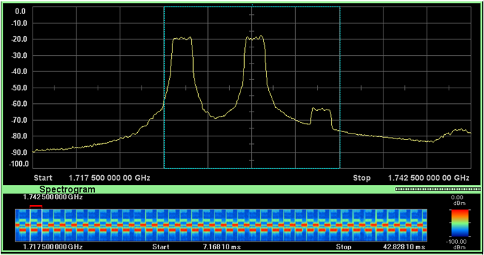
Following is the result of
System BW = 10 Mhz
n_SB = 1
hoppingMode = IntraInterSubframe
pusch-HoppingOffset = 4
Hopping bit value in DCI 0 = 3 (Type 2)
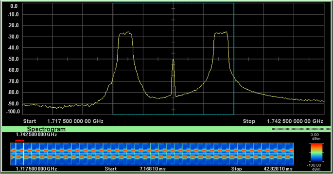
One quick question. Why we need this kind PUSCH frequency hopping only for uplink whereas we do not have this feature for downlink. It is because there are other mechnisms in downlink to avoid such a case where a large portions of allocated resources get currupted at once. One of the way is to use 'Distributed' resource allocation and the other way is to scatter the downlink resources over the wide range using special 'Resource Allocation Type'. But in uplink, you cannot implement such a distributed resource allocation since uplink is using 'Single Carrier' FDMA. (Why Single Carrier FDMA does not allow 'distributed resource allocation'? Try to think out the answer yourself. It would be a good practice of understanding one important aspect of 'Single Carrier' FDMA -:)
GUTI(Globaly Unique Temporary ID)
As the name implies, GUTI is a kind of temporary ID. Each of the UE has a couple of different kind of it's own Unique ID like IMSI, IMEI etc, but to use these unique ID all the time during the communication would make the security vulnerable. So in some wireless communication, we use a temporary ID which maps the unique ID allocated to UE. And this temporary ID changes often, so even if somebody hacked out the ID it will be useless soon.
In WCDMA, you may remember that we had several commonly used IDs, IMSI, TMSI, P-TMSI. IMSI is a unique ID stored in USIM and permanent ID. TMSI, P-TMSI is a temporary ID which is mainly used as a replacement for IMSI.
GUTI is also a temporary ID and it is slimilar to P-TMSI in UMTS. The structure of GUTI is as follows :
- PLMN (3 Bytes)
- MME Group ID (2 Bytes)
- MME Code (1 Bytes)
- M-TMSI (4 Bytes)
+-GUTI ::= TLV OPTIONAL:Exist
| +-Octet1 ::= DIVISION
| | +-EPS mobile identity IEI ::= IEI [50]
| +-Octet2 ::= DIVISION
| | +-Length of EPS mobile identity contents ::= LEN (0..255) [11]
| +-Octet3 ::= DIVISION
| | +-Spare ::= FIX [F]
| | +-Odd/even indication ::= CHOICE [....]
| | +-Type of identity ::= CHOICE [GUTI]
| +-Octet4 ::= DIVISION
| | +-MCC digit 2 ::= INT (0..15) [0]
| | +-MCC digit 1 ::= INT (0..15) [0]
| +-Octet5 ::= DIVISION
| | +-MNC digit 3 ::= INT (0..15) [15]
| | +-MCC digit 3 ::= INT (0..15) [1]
| +-Octet6 ::= DIVISION
| | +-MNC digit 2 ::= INT (0..15) [1]
| | +-MNC digit 1 ::= INT (0..15) [0]
| +-Octet7 ::= DIVISION
| | +-MME Group ID ::= INT (0..255) [128]
| +-Octet8 ::= DIVISION
| | +-MME Group ID(continued) ::= INT (0..255) [1]
| +-Octet9 ::= DIVISION
| | +-MME Code ::= INT (0..255) [1]
| +-Octet10 ::= DIVISION
| | +-M-TMSI ::= INT (0..255) [0]
| +-Octet11 ::= DIVISION
| | +-M-TMSI(continued) ::= INT (0..255) [0]
| +-Octet12 ::= DIVISION
| | +-M-TMSI(continued) ::= INT (0..255) [0]
| +-Octet13 ::= DIVISION
| +-M-TMSI(continued) ::= INT (0..255) [1]
Examples of NAS messages using GUTI are
- Attach Request
- Attach Accept
- Attach Complete
See HARQ Process in Basic Procedure page
See the description of SAE
See Initialization Sequence in Basic Procedure page.
See Integrity Protection in Basic Procedure page
With just a little modification of 3GPP description, LCG can be defined as "A group of Logical Channel which buffer status is being reported." There are four LCGs being used in LTE and each of the group has it's own ID from 0 to 3. You can see how this LCG ID is being used in BSR (Buffer Status Report)
The LCD is usually used in the DRB settings as shown below. (The most common place for DRB setting is in RRC Connection Reconfiguration message). Refer to 6.3.2 Radio resource control information elements of TS36.331
| +-drb-ToAddModList ::= SEQUENCE OF SIZE(1..maxDRB[11]) [1] OPTIONAL:Exist
| | +-DRB-ToAddMod ::= SEQUENCE [11111]
| | +-eps-BearerIdentity ::= INTEGER (0..15) [5] OPTIONAL:Exist
| | +-drb-Identity ::= INTEGER (1..32) [1]
| | +-pdcp-Config ::= SEQUENCE [101] OPTIONAL:Exist
| | | +-discardTimer ::= ENUMERATED [infinity] OPTIONAL:Exist
| | | +-rlc-AM ::= SEQUENCE OPTIONAL:Omit
| | | +-rlc-UM ::= SEQUENCE OPTIONAL:Exist
| | | | +-pdcp-SN-Size ::= ENUMERATED [len12bits]
| | | +-headerCompression ::= CHOICE [notUsed]
| | | +-notUsed ::= NULL
| | +-rlc-Config ::= CHOICE [um-Bi-Directional] OPTIONAL:Exist
| | | +-um-Bi-Directional ::= SEQUENCE
| | | +-ul-UM-RLC ::= SEQUENCE
| | | | +-sn-FieldLength ::= ENUMERATED [size10]
| | | +-dl-UM-RLC ::= SEQUENCE
| | | +-sn-FieldLength ::= ENUMERATED [size10]
| | | +-t-Reordering ::= ENUMERATED [ms50]
| | +-logicalChannelIdentity ::= INTEGER (3..10) [3] OPTIONAL:Exist
| | +-logicalChannelConfig ::= SEQUENCE [1] OPTIONAL:Exist
| | +-ul-SpecificParameters ::= SEQUENCE [1] OPTIONAL:Exist
| | +-priority ::= INTEGER (1..16) [13]
| | +-prioritisedBitRate ::= ENUMERATED [infinity]
| | +-bucketSizeDuration ::= ENUMERATED [ms100]
| | +-logicalChannelGroup ::= INTEGER (0..3) [2] OPTIONAL:Exist
Note : Following table is based on the document from MNC Group (LTE-Identifier)
|
ID |
Meaning |
Description |
Structure |
|
IMSI |
International Mobile Subscriber Identity |
Unique identification of mobile (LTE) subscriber Network (MME) gets the PLMN of the subscriber |
IMSI (not more than 15 digits) = PLMN ID + MSIN = MCC + MNC + MSIN |
|
PLMN ID |
Public Land Mobile Network Identifier |
Unique identification of PLMN |
PLMN ID (not more than 6 digits) = MCC + MNC |
| MCC |
Mobile Country Code |
assigned by ITU |
3 digits |
| MNC |
Mobile Network Code |
assigned by National Authority |
2 or 3 digits |
| MSIN |
Mobile Subscriber Identification Number |
assigned by operator |
9 or 10 digits |
| GUTI |
Globally Unique Temporary UE Identity |
To identify a UE between the UE and the MME on behalf of IMSI for security reason |
GUTI (not more than 80 bits) = GUMMEI + M-TMSI |
| TIN |
Temporary Identity used in Next Update |
GUTI is stored in TIN parameter of UEs MM context. TIN indicates which temporary ID will be used in the next update. |
TIN = GUTI |
|
S-TMSI |
SAE Temporary Mobile Subscriber Identity |
To locally identify a UE in short within a MME group (Unique within a MME Pool) |
S-TMSI (40 bits) = MMEC + M-TMSI |
|
M-TMSI |
MME Mobile Subscriber Identity |
Unique within a MME |
32 bits |
|
GUMMEI |
Globally Unique MME Identity |
To identify a MME uniquely in global GUTI contains GUMMEI |
GUMMEI (not more than 48 bits)= PLMN ID + MMEI |
|
MMEI |
MME Identifier |
To identify a MME uniquely within a PLMN Operator commissions at eNBMMEI |
MMEI (24 bits) = MMEGI + MMEC |
|
MMEGI |
MME Group Identifier |
Unique within a PLMN |
16 bits |
|
MMEC |
MME Code |
To identify a MME uniquely within a MME Group. S-TMSI contains MMEC8 |
8 bits |
|
C-RNTI |
Cell- Radio Network Temporary Identifier |
To identify an UE uniquely in a cell |
0x0001 ~ 0xFFF3 (16 bits) |
|
IMEI |
International Mobile Equipment Identity |
To identify a ME (Mobile Equipment) uniquely |
IMEI (15 digits) = TAC + SNR + CD |
|
IMEI/SV |
IMEI/Software Version |
To identify a ME (Mobile Equipment) uniquely |
IMEI/SV (16 digits) = TAC + SNR + SVN |
|
ECGI |
E-UTRAN Cell Global Identifier |
To identify a Cell in global (Globally Unique) EPC can know UE location based of ECGI |
ECGI (not more than 52 bits) = PLMN I D+ ECI |
|
ECI |
E-UTRAN Cell Identifier |
To identify a Cell within a PLMNE |
ECI (28 Bits) = eNB ID + Cell ID |
| PGW ID |
PDN GW Identity |
To identify a specific PDN GW (P-GW) HSS assigns P-GW for PDN (IP network) connection of each UE |
IP address (4 bytes) or FQDN (variable length) |
| TAI |
Tracking Area Identity |
To identify Tracking Area Globally uniqueTAI |
TAI (not more than 32 bits) = PLMN ID + TAC P-GW |
| TAC |
Tracking Area Code |
To indicate eNB to which Tracking Area the eNB belongs (per Cell) Unique within a PLMN16 |
16 bits |
| TAI List |
Tracking Area Identity List |
UE can move into the cells included in TAL list without location update (TA update) Globally unique |
Variable length |
| PDN ID |
Packet Data Network Identity |
To identify an PDN (IP network), that mobile data user wants to communicate with PDN Identity (APN) is used to determine the P-GW and point of interconnection with a PDN With APN as query parameter to the DNS procedures, the MME will receive a list of candidate P-GWs, and then a P-GW is selected by MME with policy |
PDN Identify = APN = APN.NI + APN.OI (variable length) |
| EPS Bearer ID |
Evolved Packet System Bearer Identifier |
To identify an EPS bearer (Default or Dedicated) per an UE4 |
4 bits |
|
E-RAB ID |
E-UTRAN Radio Access Bearer Identifier |
To identify an E-RAB per an UE |
4 bits |
| DRB ID |
Data Radio Bearer Identifier |
To identify a DRB per an UE4 |
4 bits |
| LBI |
Linked EPS Bearer ID |
To identify the default bearer associated with a dedicated EPS bearer4 |
4 bits |
| TEID |
Tunnel End Point identifier |
To identify the end point of a GTP tunnel when the tunnel is established |
32 bits |
Refer to TS 36.321 6.1.3 MAC Control Elements for the details.
When we say 'communication between UE and Network', we normally think about only signaling message (RRC or NAS message). When I say 'communication' in this case, it means 'control command exchange' between UE and network, not the data traffic.
In UMTS case, it is true that only RRC and NAS message functions as communication between UE and Network, but in LTE case there are several communication path at MAC layer. It implies that there are special MAC structure that carries special control information. These special MAC structure carrying the control information is called 'MAC CE', which means 'MAC Control Element'.
This special MAC structure is implemented as a special bit string in LCID field of MAC Header (Refer to http://www.sharetechnote.com/html/MAC_LTE.html for the details of MAC header).
There are several MAC CE in downlink MAC and also several MAC CE in uplink MAC. Following table from 36.213 shows the LCID types of MAC header. The parts marked in red rectangle is LCID representing various MAC CE.

MAC-I (Message Authentication Code - Integrity)
It is a special field added by the Packet Data Convergence Protocol (PDCP) layer to each RRC message for the purpose of integrity protection. The location of MAC-I field (4 bytes) in PDCP Data PDU is shown as follows.

When a UE transmit a message, the UE computes the value of the MAC-I field and fill in the MAC-I field of PDPCH PDU. When a UE receives a message, it verifies the integrity of the PDCP PDU by calculating the X-MAC based on the input parameters (Bearer ID, Direction, AS Key, Message itself etc) . If the calculated X-MAC corresponds to the received MAC-I, integrity protection is verified successfully.
For control plane data that are not integrity protected, the MAC-I field is still present and should be padded with padding bits set to 0.
Refer to the following specification for further details :
i) 36.323 - 5.7 Integrity Protection and Verification
ii) 36.323 - 6.3.4 MAC-I
iii) 33.401 - 3GPP System Architecture Evolution (SAE); Security architecture
MBSFN (Multicast Broadcase Single Frequency Network)
With the introduction of mobile device and mobile network, one thing a lot of mobile users wanted to have was "I want to see TV (Movies etc on my mobile phone.". A set of first solutions to this requirement was DVB-H/DVB-T, DMB, ISDB-T, MediaFLO etc. These technlogies are still very widely used in some contries. There are many mobile device supporting both normal mobile phone capability and the mobile TV reception functionality. So for the users point of view, it was very good since they can have both mobile phone and TV on a single device with a small extra cost. But for the service provider's point of view, it is not that simple story. Mobile phone network and mobile TV network is totally different and separate. So it would be pretty big investment to deploy the network for mobile TV.
Then many people start having another idea saying "Why don't we prvide this kind of mobile TV (Broadcasting/Multicasting) service through the existing mobile phone network/technology ?".
The intial implementation of this idea was MBMS (Multimedia Broadcast Multicast Services) in UMTS and its LTE counter part is MBSFN (Multimedia Broadcast Single Frequency network or Multicase Broadcast Single Frequency Network).
Overall concept is as follows. A eNodeB can transmit the same data (idential data) to multiple UE simulteneously. In some case, multiple eNodeB can transmit the identical data simultaneously so that UE can receive the same data from multiple eNodeBs.
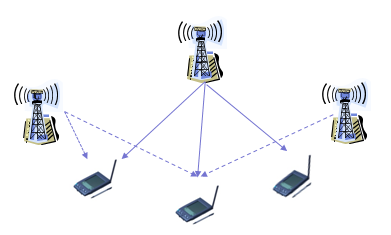
LTE uses totally separate channel (logical cand transport channel) for MBSFN. As you may guess, it uses MCCH for control information and MTCH for data transmission.
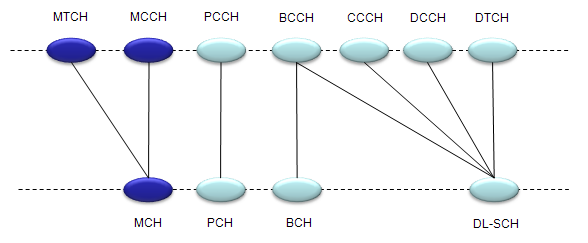
Since the MBSFN data is carried by the same physical channel which is used for mobile comunication, we have to use carefull scheduling for MBSFN so that it would not interfer normal mobile communication. This physical layer scheduling is specified in SIB2 as shown below.
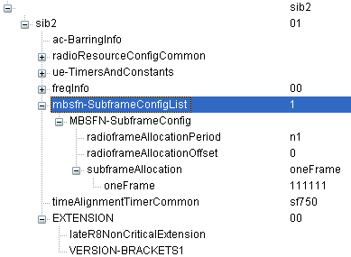
MBSFN control channel information and MBSFN Area specification is specified by SIB13 as shown below.

See the Measurement Gap in Handover page
MIB is special signal that carries the following information. As you see, you can get the System Bandwidth and SFN by decoding MIB.
i) DL Bandwidth, Number of Transmit Antenna, Reference Signal Transmit Power
ii) System Frame Number (SFN)
iii) PHICH Configuration
iv) Transmit every 40 ms , repeat every 10 ms
MasterInformationBlock ::= SEQUENCE {
dl-Bandwidth ENUMERATED { n6, n15, n25, n50, n75, n100},
phich-Config PHICH-Config,
systemFrameNumber BIT STRING (SIZE (8)),
spare BIT STRING (SIZE (10))
}
MIMO (Multi Input Multi Output)
See MIMO section in Basic Procedure page.
MME (Mobility Management Entity)
See the description of SAE
See Non Persistant Scheduling in Basic Procedure page.
PDCCH Candidate and Search Space
In the PDCCH region in DL radio frame, there can be many places where a specific PDCCH is located and UE searches all the possible locations. The possible location for a PDCCH differs depending on whether the PDCCH is UE-Specific or Common, and also depend on what aggregation level is used. All the possible location for PDCCH is called 'Search Space and each of the possible location is called 'PDCCH Candidates'.
The search space indicates the set of CCE locations where the UE may find its PDCCHs. Each PDCCH carries one DCI and is identified by RNTI. The RNTI is implicitly encoded in the CRC attachment of the DCI.
There are two types of search space : the common search space and the UE-specific search space. A UE is required to monitor both common and UE-specific search space. There might be overlap between common & UE-specific search spaces for a UE
The common search space would carry the DCIs for system information (using the SI-RNTI), paging (P-RNTI), PRACH responses (RA-RNTI), or UL TPC commands (TPC-PUCCH/PUSCH-RNTI). The UE monitors the common search space using aggregation level 4 and 8. The UE-specific search space can carry DCIs for UE-specific allocations using the UE's assigned C-RNTI, semi-persistent scheduling (SPS C-RNTI), or initial allocation (temporary C-RNTI). The UE monitors the UE-specific search space at all aggregation levels (1, 2, 4, and 8).
A table from 36.213 shows these relationship as below.

One PDCCH is carried by multiple number of consecutive CCEs. How many CCEs are necessary to carry one PDCCH ? It depends on the format of the PDCCH. The relationship between PDCCH format and the number CCE required to carry the PDCCH is as follows :
PDCCH Format 0 : Requires 1 CCE = Aggregation Level 1
PDCCH Format 1 : Requires 2 CCE = Aggregation Level 2
PDCCH Format 2 : Requires 4 CCE = Aggregation Level 4
PDCCH Format 3 : Requires 8 CCE = Aggregation Level 8
The number of consecutive CCEs required to carry one PDCCH is called "Aggregation Level'. TS 36.211 Table 6.8.1.1 shows these relations.

See Persistant Scheduling in Basic Procedure page.
See the description of SAE
PHICH stands for Physical channel HybridARQ Indicator Channel. Simply put, it is a secially designed downlink only channel which carries ACK or NACK for the PUSCH received by the network.
Uplink case they just used PUCCH for carrying ACK/NACK for each PDSCH it recieved. Why don't we use PDCCH for ACK/NACK on network side. Good topic for you to think over -:)
- PHICH is carried by the first symbol of each subframe. (It is located in the same symbol as PCFICH).
- One PHICH is carried by multiple REG.
- Multiple PHICH can be carried by the same set of REG and these multiple PHICH being carried by the same REGs are called PHICH group. These multiple PHICHs are multiplexed by orthogonal codes.
- Therefore, to indentify a specific PHICH we need to know PHICH group number and orthogonal code index.
In some (many ?) cases, mutiple PHICH can be mapped to a same set of resource elements and this group of PHICH being carried by the same set of resource element is called PHICH Group. (Why we have to carry multiple PHICH on a same set of resource elements ? Another good items for you to think -:) ).
When some "multiple things" are carried by the same physical resources, we call the multiple things being "multiplexed". So we can say a group of PHICH is being 'multiplexed' onto a set of resource elements.
When you multiplex something, you always have to think about how to "de-multiplex" them. It means that you have to multiplex somethings in such a way that they can be easily separated into individual things. If you multiplex things and those things cannot be demultiplexed, it is called a garbage -:).
One of the most common way of multiplexing in wireless communication would be to use "orthogoal sequences". (You may remember how they multplexed multiple set of data in CDMA or WCDMA). PHICH multiplexing also uses the same method, meaning they are multiplexed with a set of predefined orthogonal sequences. The set of orthogonal sequence defined in 3GPP 36.211("6.9 Physical hybrid ARQ indicator channel") is as follows.

You may notice that the PHICH spreading factor for 'Extended cyclic prefix' is half of the one for 'Normal cyclic prefix'.
As a summary, I will put down the definition of PHICH and PHICH group is defined in 3GPP 36.211 "6.9 Physical hybrid ARQ indicator channel" as follows.

You would quickly notice that number of PHICH group is twice as many for extended cyclic prefix as the one for normal cyclic prefix.
You would see that to calculate the N_group_PHICH you should know Ng value and the specification says the Ng value comes from higher layer. In this case, the higher layers means "MIB (Master Information Block)". MIB has an IE(information element) called "phich-Resource" as shown below. This IE represents Ng.
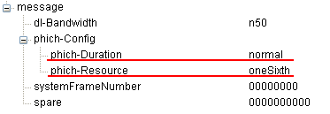
How many PHICHs can be carried by one PHICH group ? Maximum 8 PHICHs can be multiplexed into a PHICH group when we use normal CP and Maximum 4 PHICHs can be multiplexed into a PHICH when we use the extended CP. Zero PHICH in a PHICH group is also allowed.
How many PHICH groups can be supported by a system bandwidth ? This can be determined by the system bandwidth (N_RB) and a special parameter called Ng. These N_RB and Ng value is carried by MIB as shown above.
With Ng and the N_DL_RB (maximum number of RB for a system bandwidth), you can calculate the N_group_PHICH as in the following table.
|
N_RB \ Ng |
1/6 |
1/2 |
1 |
2 |
|
6 (1.4 Mhz) |
1 |
1 |
1 |
2 |
|
15 (3 Mhz) |
1 |
1 |
2 |
4 |
|
25 (5 Mhz) |
1 |
2 |
4 |
7 |
|
50 (10 Mhz) |
2 |
4 |
7 |
13 |
|
75 (15 Mhz) |
2 |
5 |
10 |
19 |
|
100 (20 Mhz) |
3 |
7 |
13 |
25 |
Each PHICH in a PHICH group is mapped to each UE.
How many REG would be required to carry one PHICH ? To figure this out, we have to go through several steps and do some mental calculation.
i) ACK and NACK is encoded by 3 bits (111 for ACK, 000 for NACK).
iii) According to Table 6.9.1-2 of 36.211, each bit of PHICH is spreaded by 4 bits (SF=4) when we use 'normal cyclic prefix'. So each PHICH after spreading with a 4 bits orthgonal sequence becomes 12 bits.
iii) PHICH is modulated in BPSK and this means 'one symbol carries one bit'. And this in turn means we need 12 symbols for each PHICH (each ACK or NACK).
iv) Each RE (Resource Elements) carries one symbol. So we need 12 REs to carry one PHICH (one ACK or NACK).
v) one REG is made up of 4 REs. So we need 3 REGs to carry one PHICH.
vi) These three REGs for one PHICH is distributed evenly across the whole bandwidth.
From those multiple Groupes in a system bandwith and multiple PHICHs within each PHICH group, how UE would know exactly which PHICH to look for ? For the very details, you have to understand the procedure described in 9.1.2 PHICH Assignment Procedure of 36.213. As I mentioned above, you have to know the PHICH group number and orthogonal sequence index to locate the specific PHICH. UE figure out these two numbers from the lowest PRB index of the first slot of the PUSCH transmission and DMRS cyclic shift.
PHR is a type of MAC CE(MAC Control Element) that report the headroom between the current UE Tx power (estimated power) and the nominal power. eNodeB (Network) use this report value to estimate how much uplink bandwidth a UE can use for a specific subframe. Since the more resource block the UE is using, the higher UE Tx power gets, but the UE Tx power should not exceed the max power defined in the specification. So UE cannot use much resource block (bandwidth) if it does not have enough power headroom.
You will find the following fig and table from 36.321.

How can I figure out real power value from this report value ? You can find the mapping table from 36.133 as shown below.
See Physical Channel Processing in LTE Basic Procedure page.
See the Precoding section in LTE Basic Procedure page.
PUCCH (Physical Uplink Control Channel) carries a set of information called "UCI(Uplink Control Information)". (This is similar to PDCCH which carries DCI (Downlink control information)". Depending on what kind of information the UCI in PDCCH carries, PDCCH is classified into various formation as follows.
|
PUCCH Format |
UCI information |
| Format 1 | Scheduling Request (SR) |
| Format 1a | 1-bit HARQ ACK/NACK with/without SR |
| Format 1b |
2-bit HARQ ACK/NACK with/without SR (This is for MIMO, 1 bit for each transport block) |
| Format 2 | CQI (20 coded bits) |
| Format 2 |
CQI and 1 or 2 bit HARQ ACK/NACK - 20 bits - Extended CP only |
| Format 2a |
CQI and 1 bit HARQ ACK/NACK - (20 + 1 coded bits) |
| Format 2b |
CQI and 2 bit HARQ ACK/NACK - (20 + 2 coded bits) |
In 3GPP 36.213, section 10.1 UE procedure for determining physical uplink control channel assignment. The PUCCH format is summarized as follows.
- HARQ-ACK using PUCCH format 1a or 1b
- HARQ-ACK using PUCCH format 1b with channel selection
- Scheduling request (SR) using PUCCH format 1
- HARQ-ACK and SR using PUCCH format 1a or 1b
- CQI using PUCCH format 2
- CQI and HARQ-ACK using PUCCH format
- 2a or 2b for normal cyclic prefix
- 2 for extended cyclic prefix
There are many topics in LTE (especially on PHY layer) which cannot be cleary explained without going through each parameters and equations shown in the specification. Physical resource allocation is one of these topics.
Physical resource allocation for PUCCH format 1, 1a, 1b is determined by the following process. Don't get panic, equation itself is all within high school math. Only our patience and persistance is required.
First get some outstanding big picture and try to figure out how the big picture is implemented by the following math process.
i) PUCCH is located around the extreme end of the system bandwidth in frequency domain. (Normally PUCCH Format 1 is located at a little less extreme edge, comparing with PUCCH format 2)
ii) The location of a PUCCH alternates between the two edges when slot number changes.
iii) Comparing to PUCCH format 2,2a,2b, Format 1 is using more variables to determine its location and most of these variables are set by higher layer message (SIB2,RRC Connection Setup, RRC Connection Reconfiguration etc)
I put the Excel spreadsheet to calculate the location here. (I haven't extensively tested my calculation. Let me know if you find any problem).
Most of the variables are specified by RRC message as shown below.
If you see a UL frame carrying a PUCCH (single PUCCH), it would look as follows.

There are many topics in LTE (especially on PHY layer) which cannot be cleary explained without going through each parameters and equations shown in the specification. Physical resource allocation is one of these topics.
Physical resource allocation for PUCCH format 2, 2a, 2b is determined by the following process. Don't get panic, equation itself is all within high school math. Only our patience and persistance is required.
First get some outstanding big picture and try to figure out how the big picture is implemented by the following math process.
i) PUCCH is located around the extreme end of the system bandwidth in frequency domain.
ii) The location of a PUCCH alternates between the two edges when slot number changes.
iii) For PUCCH format 2,2a,2b case, the only variable set by the higher layer message (SIB2) is n(2) PUCCH and all the other parameters are predefined or calculated by a predefined equation.
I put the Excel spreadsheet to calculate the location here. (I haven't extensively tested my calculation. Let me know if you find any problem).
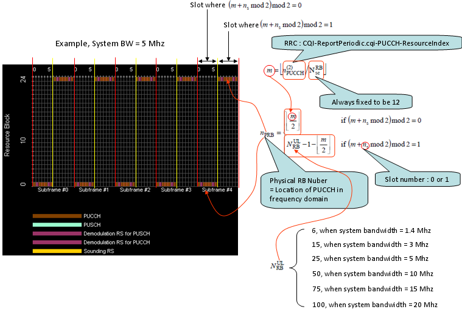
If you see a UL frame carrying a PUCCH (single PUCCH), it would look as follows.
QCI stands for QoS Class Identifier. This is a special indentifier defining the quality of packet communication provided by LTE. The range of the class is from 1 to 9. Each of this class is defined as in the following table (TS 23.203).

(Table from TS 23.203)
Note : GBR stands for Guaranteed Bit Rate
The specific QCI value is allocated for each UE and is informed to UE via 'Activate default EPS bearer context request' message as shown below.
Activate default EPS bearer context request ::= DIVISION
. ...
+-EPS QoS ::= LV
| +-Octet1 ::= DIVISION
| | +-Length of EPS quality of service contents ::= LEN (0..255) [1]
| +-Octet2 ::= DIVISION
| | +-QCI ::= CHOICE [QCI 9]
| +-Octet3 ::= DIVISION
| | +-Maximum bit rate for uplink ::= CHOICE [...]
| +-Octet4 ::= DIVISION
| | +-Maximum bit rate for downlink ::= CHOICE [...]
| +-Octet5 ::= DIVISION
| | +-Guaranteed bit rate for uplink ::= CHOICE [...]
| +-Octet6 ::= DIVISION
| | +-Guaranteed bit rate for downlink ::= CHOICE [...]
| +-Octet7 ::= DIVISION
| | +-Maximum bit rate for uplink (extended) ::= CHOICE [...]
| +-Octet8 ::= DIVISION
| | +-Maximum bit rate for downlink (extended) ::= CHOICE [...]
| +-Octet9 ::= DIVISION
| | +-Guaranteed bit rate for uplink (extended) ::= CHOICE [...]
| +-Octet10 ::= DIVISION
| +-Guaranteed bit rate for downlink (extended) ::= CHOICE [...]
See RACH page.
To be honest I don't think I saw any clear/explicit definition of this term. My personal definition of Radio Link Failure is "Physical Layer(especially low PHY) break" and in most case this failure is unintentional.
Then the next question would be "How UE or eNodeB can detect this kind of Radio Link Failure ?". Unfortunately we don't have any clear answer to this question either. So detailed detection implementation is up to UE maker and eNodeB maker, but we can think of several guidelines.
UE may assume that Radio Link is broken in the following setuation.
- The measured RSRP is too low (under a certain limit)
- It failed to decode PDCCH due to low RSRP.
eNodeB may assume that that Radio Link is broken in the following setuation.
- SRS Power (SINR) from UE is much lower than what eNB configured for the UE
- eNodeB couldn't detect (see) any NACK nor ACK from UE for PDSCH.
Does UE or eNodeB declare "Radio link Failure" whenever it sees the problem described above, even for only one subframe ?
No, it is not. In most case, this kind of problem should happen for a certain period of time consecutively and a couple of timers and parameters are involved in the criteria setup. (See T311, n310)
Then the next question would be "What UE does when it detects Radio Link Failure ?" or "What eNodeB does when it detects Radio Link Failure ?".
The most typical procedure is to go through RRC Connection Restablishement procedure.
- RACH Procedure on UL Data Arrival when Out-of-Sync
- RACH Procedure on RRC Connection Re-establishment when Out-of-Sync
RB Size allocation for each System Bandwidth
For Resource Allocation Type 0 which is the most common resource allocation type, there is a rules for DL_RB setting
if System BW = 1.4 M, it should be multiples of 1 (1 x n)
if System BW = 3 M, it is should be multiples of 2 (2 x n)
if System BW = 5 M, it should be multiples of 2 (2 x n)
if System BW = 10 M,it should be multiples of 3 (3 x n)
if System BW = 15 M, it should be multiples of 4 (4 x n)
if System BW = 20 M, it should be multiples of 4 (4 x n)
This rule is derived from the Resource Block Group(RBG) size for each bandwidth, and the RBG size for system bandwidth is shown in TS 36.213 Table 7.1.6.1-1. (Number of DL RB should should be the multiples of RBG for the corresponding system bandwidth)
* Reference for additional restriction and details :
TS 36.104 Table 5.2.1 for DL (Number of RBs for each System BW),
TS 36.211 Section 5.3.3 for UL (UL_RB = 2^a x 3^b x 5^c)
To be honest, I don't know how to clearly define this word "Redirection" even though we pretty often use this terminology. Just based on my personal understanding, "Redirection" is the mechanism of chaning cells from one (let's call this 'serving/source cell') to another (let's call this 'target cell') at a specific point in the call process where RRC Session has initiated but it is before initiating Radio Bearer Setup.
Actually there are so many different cases where UE has to select or change cells in various points during the call processing and the terminology for the cell changes gets different depending on when the cell change happens. For example, if the cell change (in this case I would say 'picking up a cell among various candiate', so the term 'change' would not be the right one) happens when you power on a UE, we call the process 'Cell Selection'. If the cell change happens while UE is in idle mode, we call it 'Cell Reselection'. and if the cell change happens while UE is in communication mode after radio bearer setup, we call it 'Handover'.
Actually 'Redirection' is not the unique cocept in LTE, we have been using this concept almost all the technology.
The typical procedure for Redirection in LTE is as follows : (Note that the initial state is "Connected Mode in source cell" and the final state is the "Idle mode in target cell")
|
Direction |
Message/Process |
Description |
|
UE --> NW |
Extended Service Request |
|
|
UE <-- NW |
RRC Connection Release |
Indicate which cell UE has to connect |
|
UE <--> NW |
< Registration to Target Cell > |
|
|
< IDLE in Target Cell > |
I think just showing the one example of the contents of these message would be worth several pages of explanation.
< Extended service request >
NAS_LTE:EMM,Extended service request
Extended service request ::= DIVISION
+-Security header type ::= V
| +-Security header type ::= CHOICE [Plain NAS message, not security protected]
+-EPS mobility management protocol discriminator ::= V
| +-Protocol discriminator ::= PD [7]
+-Extended service request message identity ::= V
| +-Message type ::= MSG [4C]
+-NAS key set identifier ::= V
| +-TSC ::= CHOICE [native security context (for KSI ASME)]
| +-NAS key set identifier ::= CHOICE [possible values for the NAS key set identifier 0]
+-Service type ::= V
| +-Service type value ::= CHOICE [mobile originating CS fallback or 1xCS fallback]
+-M-TMSI ::= LV
| +-Octet1 ::= DIVISION
| | +-Length of mobile identity contents ::= LEN (0..255) [0]
| +-Octet2 ::= DIVISION
| | +-Identity digit 1 ::= INT (0..15) [0]
| | +-Odd/even indication ::= CHOICE [even number of identity digits and also when the TMSI/P-TMSI is used]
| | +-Type of identity ::= CHOICE [No Identity]
| +-Octet3-Octet6 ::= DIVISION
| +-Identity digit p ::= OCTETARRAY SIZE(0..4)
+-CSFB response ::= TV OPTIONAL:Exist
+-Octet1 ::= DIVISION
+-CSFB response IEI ::= IEI [B-]
+-spare ::= FIX [0]
+-CSFB response value ::= CHOICE [CS fallback accepted by the UE]
< RRC Connection Release >
RRC_LTE:DL-DCCH-Message
DL-DCCH-Message ::= SEQUENCE
+-message ::= CHOICE [c1]
+-c1 ::= CHOICE [rrcConnectionRelease]
+-rrcConnectionRelease ::= SEQUENCE
+-rrc-TransactionIdentifier ::= INTEGER (0..3) [0]
+-criticalExtensions ::= CHOICE [c1]
+-c1 ::= CHOICE [rrcConnectionRelease-r8]
+-rrcConnectionRelease-r8 ::= SEQUENCE [100]
+-releaseCause ::= ENUMERATED [other]
+-redirectedCarrierInfo ::= CHOICE [cdma2000-1xRTT] OPTIONAL:Exist
| +-cdma2000-1xRTT ::= SEQUENCE
| +-bandClass ::= ENUMERATED [bc2]
| +-arfcn ::= INTEGER (0..2047) [0]
+-idleModeMobilityControlInfo ::= SEQUENCE OPTIONAL:Omit
+-nonCriticalExtension ::= SEQUENCE OPTIONAL:Omit
Reference signal is a special data sequence which is located at specific location (resource elements) in downlink frame which is supposed to be decoded by UE and taken as a signal for RSRP, RSRQ. The location of the downlink reference signal is illustrated at Reference Signal section of Downlink Frame Structure page.
To implement this signal, you need to go through two steps - signal generation and resource allocation.
Signal generation is done by the following procedure. You would notice that Cell ID is a key parameter for the sequence and you would guess the sequence will be unique for each Cell ID.
Another think you would notice here would be that downlink reference signal is a kind of Gold sequence whereas most of UL reference signal and DL Synchronization signal is based on Zadoff Chu sequence.
Once you have generated the sequence, next step is to allocate each data point of the sequence to a specified resource elements. That is done by the following process. The resulting location of the process is as shown in Reference Signal section of Downlink Frame Structure page.
Reference to : TS 36.213 7.1.6 Resource allocation
Resource Allocation Type specifies the way in which the scheduler allocate resource blocks for each transmission. Just in terms of flexibility, the way to give the maximum flexibility of resource block allocation would be to use a string of a bit map (bit stream), each bit of which represent each resource block. This way you would achieve the maximum flexibility, but it would create too much complication of resource allocation process or too much data (too long bit map) to allocate the resources.
So LTE introduces a couple of resource allocation types and each of the resource allocation type uses a predefined procedures. There are three different resource allocation types in LTE, Resource Allocation Type 0, 1, 2.
|
DCI Format |
Possible Resource Allocation Type |
Memo |
|
1 |
Type 0 or Type 1 |
determined by resource allocation header field |
|
1A |
Type 2 |
|
|
1B |
Type 2 |
|
|
1C |
Type 2 |
|
|
1D |
Type 2 |
|
|
2 |
Type 0 or Type 1 |
determined by resource allocation header field |
|
2A |
Type 0 or Type 1 |
determined by resource allocation header field |
Resource Allocation Type 0 : This is the simplest way of allocation resources. First it divides resource blocks into multiples of groups. This resource block group is RBG(Resource Block Group) called. The number of resource block in each group varies depending on the system band width. It means RBG size gets different depending on the system bandwidth. The relationship between RBS size (the number of resouce block in a RBG) and the system bandwidth as follows.
|
System BW |
RBG Size |
|
1.4 |
1 |
|
3 |
2 |
|
5 |
2 |
|
10 |
3 |
|
15 |
4 |
|
20 |
4 |
Resource allocation type 0 allocate the resources using a bitmap and each bit represents one RBG.
The data hierachy in this type is "RB --> RGB" and the resource allocation is done at the level of RBG. Following is an example in RA Type 0 for 10 Mhz BW. One thing you have to notice here is each bit in the bitmap represents one RBG, not one RB.
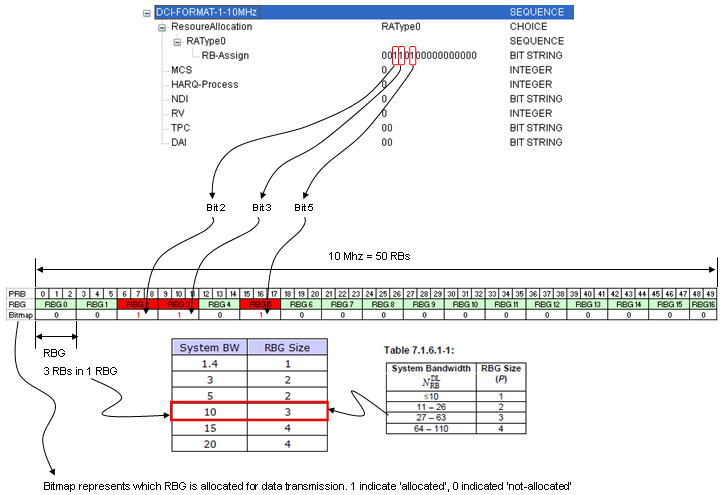
Resource Allocation Type 1 : I don't know how to explain about this type without using a well illustrated picture (I will try to create it later). Like in Resource Allocation Type 0, this RA type (Resource Allocation Type) is also using bitmap for the allocation, but in this RA type an additional layer was added. The new layer (hiearchy) is RBG Subset. So the overal hierarchy is "RB --> RBG --> RBG Subset" and the resource allocation is done at 'RBG Subset' level. One RBG Subset is made up of mulple RBGs. Exactly how many RBGs are in one RBG Subset varies depending on the bandwidth, but the number of RBs within a RBG is the same as number RBGs within an RBG Subset. Following is an example in RA Type 1 for 10 Mhz BW. Things you have to notice here are
-
Each bit in the bitmap represents RB.
-
Each RBG is allocated across multiple subsets as shown below.
-
The number of subsets is equal to the number of RBs within a RBG.
-
You can not allocate all RBs since there is no subset which can covers all RBs.

Resource Allocation Type 2 : In this case, network allocate a set of contiguous RBs. But this contiguous RB is "Virtual" concept, not the "Physical" concept. It means that even though MAC layer allocate the multiple contiguous RBs, they may not be aligned contiguously when it get transmitted at PHY layer. This means that there should be a rule/algorithm to convert this logical(virtual) RB allocation to physical RB allocation.
There are two type of the conversion, one is 'localized' and the other is 'distributed'. When you select 'localized', both virtuall allocation and physical allocation allocate RBs in contiguous way. When you select 'distributed', the virtual RB allocation is contiguous, but physical allocation is not contiguous (they are distributed over wider frequency ranges). Following is an example in RA Type 2 for 10 Mhz BW.
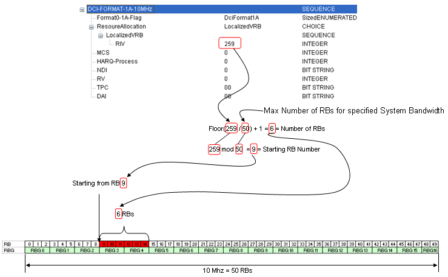
Resource Allocation Type vs DCI format vs TM mode Mapping Table
Determining a Resource Allocation type is very tricky since many other parameters get involved. One informative table would help you with this job.
Resource Allocation and Management Unit
Reading various LTE specification, you will see many terms which seems to be related to resource allocation but looks very confusing. At least you have to clearly understand the following units.
i) Resource Element(RE) : The smallest unit made up of 1 symbol x 1 subcarrier.
ii) Resource Element Group (REG) : a group of 4 consecutive resource elements. (resource elements for reference signal is not included in REG)
iii) Control Channel Element (CCE) : a group of 9 consective REG
iv) Aggregation Level - a group of 'L' CCEs. (L can be 1,2,4,8)
v) RB (Resource Block) : I think everybody would know what this is. This is a unit of 72 resource elements which is 12 subcarrier by 6 symbols.
vi) RBG (Resource Block Group) : This is a unit comprised of multiple RBs. How many RBs within one RBG differs depending on the system bandwidth. (Refer to RB Size allocation for each System Bandwidth for the details)
We use these units in hierachical manner depending on whether it is for control channel or data channel.
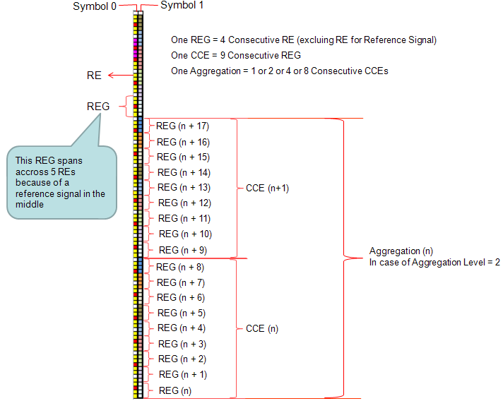
For PDCCH, the hierachy would be : RE --> REG --> CCE --> Aggregation Level
==> I think a couple of example would give you more practical understanding.
Example 1 > a PDCCH transmission
i) The CCE index for a certain subframe = 4
ii) Aggregation Level is 2
iii) The subframe is sending DCI1 only
Resource Allocation : Network would allocate the DCI 1 spreaded over CCE4, CCE5.
Example 2 > a PDCCH transmission
i) The CCE index for a certain subframe = 4
ii) Aggregation Level is 2
iii) The subframe is sending DCI1, DCI 0
Resource Allocation : Network would allocate the DCI 1 spreaded over CCE4, CCE5 and allocate the DCI 0 spreaded over CCE6, CCE7.
Example 3 > a PDCCH transmission
i) The CCE index for a certain subframe = 4
ii) Aggregation Level is 2
iii) The subframe is sending DCI1, DCI 0 and DCI 3 (power control)
Resource Allocation : Network would allocate the DCI 1 spreaded over CCE4, CCE5 and allocate the DCI 0 spreaded over CCE6, CCE7 and allocate two CCE for DCI 3 but DCI 3 would be allocated to a common search space (not to a user specific search space).
For PDSCH, the heirachy would be RE --> RB --> RBG
==> This is pretty long story. Please refer to Resource Allocation Type
As far as I understand, 'Retry Test' is not a strict 3GPP terminology, but you may often hear about this test since some of network operator requires this test as an IOT level.
As the term says, 'Retry Test' is the test in which Network put DUT in a condition where the DUT has to 'retry' something.
Then what is the 'something' ? meaning 'In what situation UE has to retry something'. There can be many different cases for this. One of the most typical cases is when UE get some reject message to the message it sent to the network.
One example for this is 'RRC Connection Request' retry and overall sequence is as follows.
i) UE --> NW : 'RRC Connection Request'
ii) UE <-- NW : 'RRC Connection Reject'.
iii) < UE waits for a certain period of time. UE does not resend 'RRC Connection Request' during this period >
iv) UE --> NW : 'RRC Connection Request' (Retry)
It seems that network operators are more interested in step iii). They want to specify this timing as they like and make it sure that UE should not retry during the time frame. I think it is understandable since if UE retry something too often it would generate huge load on the network, but if UE does not retry it too long, it will give the bad user experience.
RI (Rank Indicator, Rank Index)
To have clear understanding of RI, you have to understand the detailed concept of MIMO, Channel Status Information Matrix and mathematical definition of Rank of a matrix. Depending on instruction from the network, UE may periodically or aperiodically measure RI and report it to Network. Refer to CQI,PMI,RI Report section for this.
But I will explain the practical/intuitive meaning of RI here.
In simple words, RI is an indicator showing how well multiple Antenna work. What do you mean by "how well the multiple Antenna work ?". We usually say "Each of the multiple antenna (e.g, each antenna in MIMO configuration) works well if the signal from each antenna has NO correlation to each other". "No correlation" implies "no interference to each other".
RI value become same as the number of Antenna, it means "No Correlation between the antenna", "No interference to each other", "Best Performance".
For example, in case of 2x2 MIMO, the RI value can be 1 or 2. When the value 2 in this case means "No Correlation between the antenna", "No interference to each other", "Best Performance". If the value is 1, it implies that the signal from the two Tx antenna is percieved by UE to be like single signal from single Antenna, which means the worst performance.
One of the other numbers which you would very frequently come accross is RNTI. RNTI stands for Radio Network Temporary Identifier.
As the name implies, it is a kind of Identification number. Normally we use indentification number to differntiate one thing from all other similar things. For example, your driver's license number let you identify yourself from all other drivers. Social Security number do the same thing as well.
Getting more specifically into LTE, this RNTI is used to indentify one specific radio channel from other radio channel and one user from another user. As you may recall, in WCDMA is a RNTI concept which is carried as part of MAC header to deferentiate one user to another while in communication state. and in WCDMA case it used special channelization code to deferentiate one radio channel from the other.
To my personal perception, RNTI in LTE seems to act as combined role of WCDMA RNTI and WCDMA channelization code (but RNTI has nothing to do with orthogonality.. so this is very superfical analogy. Just take this as an analogy just for understanding high level functionality).
What kind of RNTIs are there in LTE ?
The answer is A LOT -:). Followings are the brief summary of RNTIs being used in LTE. More detailed explanation will be updated continuously later.
* P-RNTI : It stands for Paging RNTI.
* SI-RNTI : It stands for System Information RNTI.
* RA-RNTI : It stands for Random Access RNTI
* C-RNTI : It stands for Cell RNTI
* TC-RNTI : It stands for Temporary C-RNTI
* SPS-C-RNTI : It stands for Semi persistance Scheduling C-RNTI
* TPC-PUCCH-RNTI : It stands for Transmit Power Control-Physical Uplink Control Channel-RNTI
* TPC-PUSCH-RNTI : It stands for Transmit Power Control-Physical Uplink Shared Channel-RNTI
* M-RNTI : It stands for MBMS RNTI
Who issues these RNTI ?
Network issues RNTI.
Exactly what does RNTI do for each of those radio channel ? The detailed process differs with the types of RNTIs, but generally speaking all of these RNTI is used to scramble the CRC part of the radio channel messages. It implies that if UE does not know the exact RNTI values for each of the cases, it cannot decode the radio channel messages even though the message reaches the UE intact.
One of the most common questions that I got about RNTI is "There are a lot of different types of RNTI and I don't see any RNTI information on DCI or Higher layer signaling message. Then how can PHY layer know which RNTI it has to use to decode a data ?". The answer is "MAC or Layer 1 controller would instruct PHY on which RNTI it has to use". Then a next questions comes out. "How MAC or Layer 1 controller would know which RNTI to be used ?". There is no explicit algorithm for this, MAC/L1 controller needs to figure it out "based on context". For example, if it is at the subframe where SIB is transmitted, it would instruct PHY to use SI-RNTI. if UE is in connected mode, it may instruct to use C-RNTI, TPC RNTI etc.
Following is the quotes from 3GPP specification showing how RNTI is used for various cases.. for the exact details, you should see the specification but this partial quote would give you a rough idea of the usage of RNTI.
From 36.212 ---
5.3.3 Downlink control information
A DCI transports downlink or uplink scheduling information, or uplink power control commands for one RNTI. TheRNTI is implicitly encoded in the CRC.
5.3.3.1.3 Format 1A
Format 1A is used for random access procedure initiated by a PDCCH order only if format 1A CRC is scrambledwith C-RNTI
For distributed VRB: .. if the format 1A CRC is scrambled by RA-RNTI, P-RNTI, or SI-RNTI
5.3.3.2 CRC attachment
This section explain in detail on how CRC is scrambled by RNTI
From 36.213 ---
5.1.1.1 UE behaviour
* δ_PUSCH is a UE specific correction value, also referred to as a TPC command and is included in PDCCH withDCI format 0 or jointly coded with other TPC commands in PDCCH with DCI format 3/3A whose CRC paritybits are scrambled with TPC-PUSCH-RNTI
* if the TPC command PUSCH δ_PUSCH is included in a PDCCH with DCI format 0 where the CRC is scrambled by the Temporary C-RNTI
* The UE attempts to decode a PDCCH of DCI format 0 with the UEs C-RNTI or SPS CRNTI and a PDCCH of DCI format 3/3A with this UEs TPC-PUSCH-RNTI in everysubframe
5.1.2.1 UE behaviour
δ_PUCCH is a UE specific correction value, also referred to as a TPC command, included in a PDCCH with DCIformat 1A/1B/1D/1/2A/2 or sent jointly coded with other UE specific PUCCH correction values on a PDCCHwith DCI format 3/3A whose CRC parity bits are scrambled with TPC-PUCCH-RNTI.
o The UE attempts to decode a PDCCH of DCI format 3/3A with the UEs TPC-PUCCH-RNTI and oneor several PDCCHs of DCI format 1A/1B/1D/1/2A/2 with the UEs C-RNTI or SPS C-RNTI onevery subframe except when in DRX.
o If the UE decodes a PDCCH with DCI format 1A/1B/1D/1/2A/2 and the corresponding detectedRNTI equals the C-RNTI or SPS C-RNTI of the UE, the UE shall use the δ PUCCH provided in that PDCCH.
6.1 Physical non-synchronized random access procedure
* A preamble index, a target preamble received power (PREAMBLE_RECEIVED_TARGET_POWER), acorresponding RA-RNTI and a PRACH resource are indicated by higher layers as part of the request.
* Detection of a PDCCH with the indicated RA-RNTI is attempted during a window controlled by higher layers
7.1 UE procedure for receiving the physical downlink shared channel
* If a UE is configured by higher layers to decode PDCCH with CRC scrambled by the SI-RNTI, the UE shall decode thePDCCH and the corresponding PDSCH according to any of the combinations defined in table 7.1-1. The scramblinginitialization of PDSCH corresponding to these PDCCHs is by SI-RNTI.
* If a UE is configured by higher layers to decode PDCCH with CRC scrambled by the P-RNTI, the UE shall decode thePDCCH and the corresponding PDSCH according to any of the combinations defined in table 7.1-2. The scramblinginitialization of PDSCH corresponding to these PDCCHs is by P-RNTI.
* If a UE is configured by higher layers to decode PDCCH with CRC scrambled by the C-RNTI, the UE shall decode thePDCCH and any corresponding PDSCH according to the respective combinations defined in table 7.1-5. Thescrambling initialization of PDSCH corresponding to these PDCCHs is by C-RNTI.
* If a UE is configured by higher layers to decode PDCCH with CRC scrambled by the Temporary C-RNTI and is notconfigured to decode PDCCH with CRC scrambled by the C-RNTI, the UE shall decode the PDCCH and thecorresponding PDSCH according to the combination defined in table 7.1-7. The scrambling initialization of PDSCHcorresponding to these PDCCHs is by Temporary C-RNTI.
RSRP(Reference Signal Recieved Power)
RSRP is the linear average of reference singal power (in Watts) accorss the specified bandwidth (in number of REs). This is the most important item UE has to measure for cell selection, reselection and handover. You can think of this as the one similar to CPICH RSCP in WCDMA.
Following is an example of one downlink radio frame. The red part is the resource elements in which reference signal is being transmitted. RSRP is the linear average of all the red part power.
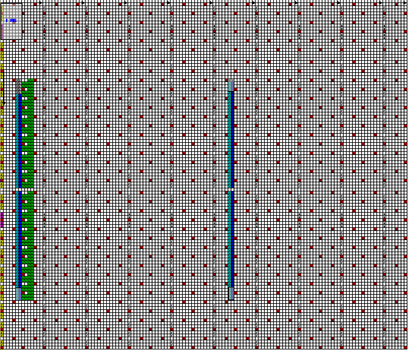
Since this measures only the reference power, we can say this is the strength of the wanted signal. But it does not gives any information about signal quality. RSRP gives us the signal strenth of the desired signal, not the quality of the signal. For quality of the signal information another parameter called 'RSSQ' is used in some case.
UE usually measures RSRP or RSRQ based on the direction (RRC message) from the network and report the value. When it report this value, it does use the real RSRP value. It sends a non-negative value ranging from 0 to 97 and each of these values are mapped to a specific range of real RSRP value as shown in the following table from 36.133.

RSRQ(Reference Signal Recieved Quality)
RSRQ is defined as (N x RSRP)/RSSI, where N is the number of RBs over the measurement bandwidth. As you see from the definition of RSSI, RSSI contains all sorts of power including power from co-channel serving & non-serving cells, adjacent channel interference, thermal noise, etc. Therefore, (N x RSRP)/RSSI indicates "What is the portion of pure RS power over the whole E-UTRA power recived by the UE".
As you see, this is not the direct measurement, it is a kind of derived value from RSRP and RSSI. By deviding RSRP by RSSI, it could give some information about interference as well in addition to the strength of the wanted signal.
Since this is the ratio of two different power value, the unit of RSRQ is dB and the value would be always negative (because RSSI value will aways be larger than N x RSRP)
UE usually measures RSRP or RSRQ based on the direction (RRC message) from the network and report the value. When it report this value, it does use the real RSRQ value. It sends a non-negative value ranging from 0 to 34 and each of these values are mapped to a specific range of real RSRQ value as shown in the following table from 36.133.

RSSI(Recieved Signal Strength Indicator)
RSSI is the total power UE observes across the whole band. This includes the main signal and co-channel non-serving cell signal, adjacent channel interference and even the thermal noise within the specified band. This is the power of non-demodulated signal, so UE can measure this power without any synchronization and demodulation.
Following is an example of one downlink radio frame. The red part is the resource elements in which reference signal is being transmitted. Blue and light blue part is for synchronization signal. Yellow part is for PDCCH. Green part is for MIB. Whitepart is PDSCH where user data is being transmitted. RSSI is the total power for all color and any possible noise/interference existing over all these area.
SAE (Service Architecture Evolved)
Simply put, SAE is just a terminology representing LTE network architecture. More simply put, SAE = LTE Network -:). If I represent it graphically, it looks as follows. You will find the various different type of SAE diagram from various source ranging from very simple to extremly complicated one. Following is a kind of simple presentation but it has almost everything of LTE component. The complicated diagram you would find from other source is just a combination of LTE network and other networks like UMTS, GSM etc.

Video Tutorials :
- http://www.youtube.com/watch?v=GYrFwstUClo&feature=related
- http://www.youtube.com/watch?v=-gnV4WuNjUU&feature=related
- http://www.youtube.com/watch?v=0hrKcvNO6G4&feature=related(Award Solution)
You can extend the LET SAE as follows to interface with other technology.
Now you'd better understand function of each node (block) in the diagram. The more you know about each of these blocks, the easier your troubleshooting, test case creation, test will be since the role of each of these nodes will be related to the information elements (IE) of RRC/NAS message. But here I would just put the brief summary of functions of each node and I leave it to you to dig into the details.
MME (Mobility Management Entity): Just remember this as the most important component of SAE which has following functionality. You can take MME as a center for all signaling message.
- Idle mode UE (User Equipment) tracking Process
- Paging Process.
- Bearer activation/deactivation process
- Choosing the SGW for a UE at the initial attach
- Core Network (CN) node relocation at time of intra-LTE handover
- Authenticating the user (by interacting with the HSS)
- Destination of NAS message
- Generation and allocation of temporary identities to UEs.
- Authorization of the UE to camp on the service providers Public Land Mobile Network (PLMN)
- Enforces UE roaming restrictions
- Termination Point for Ciphering/Integrity for NAS signaling
- Security key management
- Lawful interception of signaling is also supported by the MME
- Provides the control plane function for mobility between LTE and 2G/3G access networks in connection to SGSN
SGW (Serving Gateway) : Simply put, this is a center for all user data (packet data).
- Routes and forwards user data packets
- Act as the mobility anchor for the user plane during inter-eNodeB handovers
- Act as the anchor for mobility between LTE and other 3GPP technologies
- Terminates the DL data path and triggers paging when DL data arrives for the UE when UE is in Idle mode
- Manages and stores UE contexts, e.g. parameters of the IP bearer service, network internal routing information
- Performs replication of the user traffic in case of lawful interception
PGW (PDN Gateway)
- Provides connectivity from the UE to external packet data networks
- Performs policy enforcement, packet filtering for each user, charging support, lawful Interception and packet screening
- Act as the anchor for mobility between 3GPP and non-3GPP technologies such as WiMAX and 3GPP2 (CDMA 1X and EvDO)
HSS (Home Subscriber Server) : This is a central database that contains user-related and subscription-related information. It is like "HLR(WCDMA) + AuC(WCDMA) + Additional Information(LTE)"
- Mobility management
- Call and session establishment support
- User authentification and access authorization
In any communication, one of the most important requirement would be that the transmitter and reiver operate at the same tempo, more technically speaking that the transmitter and reciever should operates in synchronized mode.
Speaking in laymen's terminology, the transmitter and reciever has it's own clock and they have to synchronize the clock before the communication starts.
What kind of clock they have in LTE ? Like our analog wrist clock, LTE clock has two arms. One arm ticks every 10 ms and the other arm ticks every 1 ms. Again as in the wrist clock, each of ticks has specific numbers and the numbers has a certain range.
In LTE, the arm ticking in 10 ms interval has numbers between 0 and 1023 and these numbers are called SFN (System Frame Number) and the other arm ticking in 1 ms interval has numbers between 0 and 9, and this number is called subframe number.
Before the transmitter (eNode B) and the reciever (UE) in LTE start communicating each of other they have to set these two clock arms to be the same number and this synchronization happens during cell search and timing synch process. In short, they synchronize the tempo (exact time the arm ticks) by cell search and timing sync and UE get SFN sync from MIB which carries SFN number in it.
For further details about timing sync process, refer to 'Timing Sync Section'.
See the description of SAE
SIB 1
i) Cell Access Related Information - PLMN Identity List, PLMN Identity, TA Code, Cell identity & Cell Status
ii) Cell Selection Information - Minimum Receiver Level
iii) Scheduling Information - SI message type & Periodicity, SIB mapping Info, SI Window length
SIB 2
i) Access Barring Information - Access Probability factor, Access Class Baring List, Access Class Baring Time
ii) Semi static Common Channel Configuration - Random Access Parameter, PRACH Configuration
iii) UL frequency Information - UL EARFCN, UL Bandwidth, additional emmission
SIB 3
i) Information/Parameters for intra-frequency cell reselections
SIB 4
i) Information on intra-frequency neighboring cells
SIB 5
i) Information on inter-frequency neighboring cells
SIB 6
i) Information for reselection to UMTS (UTRAN) cells
SIB 7
i) Information for reselection to GSM (GERAN) cells
SIB 8
i) Information for reselection to CDMA2000 systems
SIB 9
i) Home eNodeB name for future LTE femtocell applications
SIB 10 + 11
i) ETWS (Earthquake and Tsunami Warning System) information
SIB 12
i) Commercial Mobile Alerting System (CMAS) information.
See Cell ID Detection and SIB Detection in LTE Basic Procedure page.
See SIB Scheduling in LTE Basic Procedure page.
Everybody would know what SMS (Short Messaging Service) is. So I will not talk about what SMS is. The question you are more interested in would be "Is it possible to send SMS in LTE ?" and "How to do it ?".
Yes, SMS is possible in LTE and there are two ways to implement SMS in LTE. The ideal solution would be doing SMS using IMS. IMS over LTE is specified to transfer any form of data (e.g, voice, SMS and any other form of multi media data), but the question is when every body (both network implementation and UE implementation) will seamlessly implement this IMS on their network and UE. It seems that they are not implemented fully at least for now. So they thought out a kind of interim solution called SG LTE. (It is like we have CS Fallback as an interim solution before they fully implement voice call over IMS). For the over view of SG SMS, refer to this blog. I found the explanation in the blog is short, practical and easy to understand.
The implementation logic of SG-SMS is very similar to WCDMA SMS. In WCDMA, we injected the SMS message into a DCCH channel and send it to the destination. It means that we carried the message over a control channel, not over a data channel. SG SMS is also using a similar concept, we send the message over a control channel. One example is as follows (This is for MT SMS case).
i) UE <-- NW : RRC Connection Reconfiguration
ii) UE --> NW : RR Connection Reconfiguration Comlete
iii) UE <-- NW : dlInformationTransfer (embedd the SMS message - CP Data - into this message)
iv) UE --> NW : ulInformationTransfer (embedd CP-ACK into this message)
Actually Step iii) carries a special NAS message called "DOWNLINK NAS TRANSPORT" and this NAS message carries CP Data in it.
Actually Step iv) carries a special NAS message called "UPLINK NAS TRANSPORT" and this NAS message carries CP ACK in it.
For further information on these special NAS TRANSPORT Message, you can refer to 24.301
[TS 24.301, clause 5.6.3.1]
The purpose of the transport of NAS messages procedure is to carry SMS messages in an encapsulated form between
the MME and the UE. The procedure may be initiated by the UE or the network and can only be used when the UE is
attached for EPS services and IMSI attached for non-EPS services and is in EMM-CONNECTED mode.
[TS 24.301, clause 5.6.3.3]
The network initiates the procedure by sending a DOWNLINK NAS TRANSPORT message. When receiving the
DOWNLINK NAS TRANSPORT message, the EMM entity in the UE shall forward the contents of the NAS message
container IE to the SMS entity.
[TS 24.301, clause 9.9.3.22]
This information element is used to encapsulate the SMS messages transferred between the UE and the network. The
NAS message container information element is coded as shown in figure 9.9.3.22.1 and table 9.9.3.22.1.
The NAS message container is a type 4 information element with a minimum length of 4 octets and a maximum length
of 253 octets.
SON stands for Self Organizing Network. What does this mean ? Ideally it means that just add a eNB wherever you want to put and just connect power and switch on, it would configure all of its configuration by itself and makes itself ready for service.
If you think a whole mobile network as a single PC, SON is like 'Plug-and-Play' functionality. (just Plug a any hardware (e.g, Keyboard, Printer etc) and it would play).
Normally when a system operator construct a network, they go through following steps.
i) Network Planning
ii) Bring the hardware (e.g, eNB) to the locations determined at Network Planning Process
iii) Hardware installation
iv) basic configuation
v) Otimizing parameters
Ideal goal of SON is to automate large portions of step i) and all of step iv), v) meaning that the installed system do all of iv), v) by itself.
In more formal way, SON framework can be illustrated as follows.(This illustration is from http://www.nomor.de/uploads/gc/TQ/gcTQfDWApo9osPfQwQoBzw/SelfOrganisingNetworksInLTE_2008-05.pdf )
But we know from experience that any Fancy idea takes very long time to be fully implemented and adopted by everybody and sometimes the idea would disappear even before it is realized. SON itself is at its very early stage (as of now, May 2012 at least). I would say it is at the stage of doing only a portion of step iv). I personally don't think SON concept would disappear but it would take pretty long time to be realized at the level of Plug-and-Play of our PC component.
You may have a question "Why we need this kind of idea ?", "Why we want to achieve this ?"
Typical answers that I can think of is
i) Generally as the data rate of a technology gets higher, the cell coverage (range) gets smaller. It means we need to deploy more eNBs. and especially in LTE, we would see a lot of pico cells and femoto cells even inside of our house. So it would be practically impossible or highly costly to send specialized engineer to install and configure all of those hardware.
If we can make the hardware configure itself, we can have less skilled person just setup the hardware at any location and power on, or we can just deliver the hardware (e.g, femtocell) to a home and let them just plug in the power.
ii) Normally as new (advanced) technology introduced, number of configuration parameters gets exponentially increased, so manual tuning of all those parameters whould be almost impossible.
iii) Now we have all the different technologies (CDMA, GSM, WCDMA, LTE) are running simulteneously and in many cases these technologies interact each other. This makes the mannual optimization almost inpractical.
For further details of SON, I strongly recommend to see this presentation http://lteworld.org/video/ltelte-son-femtocells
SRS (Sounding Reference Signal)
SRS stands for Sounding Reference Signal. Literally it says a kind of "Reference Signal".
Reference Signal for who ? Is it for UE or for eNodeB ? It is reference signal for eNodeB to figure out the channel quality of uplink path for each subsections of frequence region.
Who is sending this reference signal ? It is UE. (You may remember from Uplink Framestructure section that UE is transmitting SRS at the last symbol of a slot)
Why we need this kind of signal ? As you know, in LTE eNodeB often allocates only a partial section of full system bandwidth for a specific UE and at a specific time. So it would be good to know which section across the overall bandwidth has better channel quality comparing to the other region. In this case, Network can allocate the specific frequency region which is the best for each of the UEs. (If we always have to use full bandwidth, we may not need this kind of reference signal since there is no choice even when there is a better or worse spots within the bandwidth).
How often UE transmit SRS ?
It depends on the configuration set by the signaling message (SIB2, RRC Connection Setup, RRC Connection Reconfiguration etc), but UE can transmit it every two subframes at the most and every 32 frame (320 subframe) at the least (10 bit signaling parameter srs-ConfigIndex tells UE of the periodicity of SRS transmission and the period can be 2,5,10,20,40,80,160,320 ms). Actually there is an option in which UE does not transmit SRS at all.
SRS is transmitted at the last symbol of UL slot with full system band area and it is transmitted by a certain interval. What if multiple UE has the same SRS transmission cycle(interval) ? Would there be any possibility that a bunch of SRS from multiple UEs are overlapped ?
Yes, this is possible. To avoid this kind of situation, we can configure each of UE to transmit SRS in hopping mode with different hopping schedule.
For further details of SRS, please refer to the following link.
http://www.steepestascent.com/content/mediaassets/html/LTE/Help/SRS.html
As I mentioned earlier, SRS configuration is notified to UE by a couple of RRC messages. Common RRC messages carrying SRS configuration info are SIB2, RRC Connection Setup, RRC Connection Reconfiguration.
There are largerly two kinds of SRS, Common SRS and Dedicated SRS. Common SRS is also called Cell Specific SRS and Dedicated SRS is also called UE Specific SRS.
In SIB2, SRS is configured in following information elements. You can disable SRS by setting soundingRS-UL-ConfigCommon if you want.
| +-radioResourceConfigCommon ::= SEQUENCE
| | +-rach-ConfigCommon ::= SEQUENCE
| | +-bcch-Config ::= SEQUENCE
| | +-pcch-Config ::= SEQUENCE
| | +-prach-Config ::= SEQUENCE
| | +-pdsch-ConfigCommon ::= SEQUENCE
| | +-pusch-ConfigCommon ::= SEQUENCE
| | +-pucch-ConfigCommon ::= SEQUENCE
| | +-soundingRS-UL-ConfigCommon ::= CHOICE [setup]
| | | +-setup ::= SEQUENCE [0]
| | | +-srs-BandwidthConfig ::= ENUMERATED [bw2]
| | | +-srs-SubframeConfig ::= ENUMERATED [sc0]
| | | +-ackNackSRS-SimultaneousTransmission ::= BOOLEAN [TRUE]
| | | +-srs-MaxUpPts ::= ENUMERATED OPTIONAL:Omit
| | +-uplinkPowerControlCommon ::= SEQUENCE
| | +-ul-CyclicPrefixLength ::= ENUMERATED [len1]
In RRC Connection Setup and RRC Connection Reconfiguration, SRS is configured in following information elements. You can disable SRS by setting soundingRS-UL-ConfigDedicated if you want.
| +-physicalConfigDedicated ::= SEQUENCE [0000110110] OPTIONAL:Exist
| +-pdsch-ConfigDedicated ::= SEQUENCE OPTIONAL:Omit
| +-pucch-ConfigDedicated ::= SEQUENCE OPTIONAL:Omit
| +-pusch-ConfigDedicated ::= SEQUENCE OPTIONAL:Omit
| +-uplinkPowerControlDedicated ::= SEQUENCE OPTIONAL:Omit
| +-tpc-PDCCH-ConfigPUCCH ::= CHOICE [setup] OPTIONAL:Exist
| +-tpc-PDCCH-ConfigPUSCH ::= CHOICE [setup] OPTIONAL:Exist
| +-cqi-ReportConfig ::= SEQUENCE OPTIONAL:Omit
| +-soundingRS-UL-ConfigDedicated ::= CHOICE [setup] OPTIONAL:Exist
| | +-setup ::= SEQUENCE
| | +-srs-Bandwidth ::= ENUMERATED [bw0]
| | +-srs-HoppingBandwidth ::= ENUMERATED [hbw0]
| | +-freqDomainPosition ::= INTEGER (0..23) [0]
| | +-duration ::= BOOLEAN [FALSE]
| | +-srs-ConfigIndex ::= INTEGER (0..1023) [0]
| | +-transmissionComb ::= INTEGER (0..1) [0]
| | +-cyclicShift ::= ENUMERATED [cs0]
| +-antennaInfo ::= CHOICE [explicitValue] OPTIONAL:Exist
| +-schedulingRequestConfig ::= CHOICE OPTIONAL:Omit
For srs-Bandwidth, refer to following tables from 36.211. Basically these tables defines how many resource block (frequency bandwidth) is allocated for SRS transmission.


For srs-SubframeConfig, please refer to the following table from 36.211. Since srs-SubframeConfig is parameter only for SRS Common (Cell Specific SRS), this table is applied only for Cell Specific SRS. Basically this table defines on which subframe SRS is transmitted and on which subframe it is not transmitted.
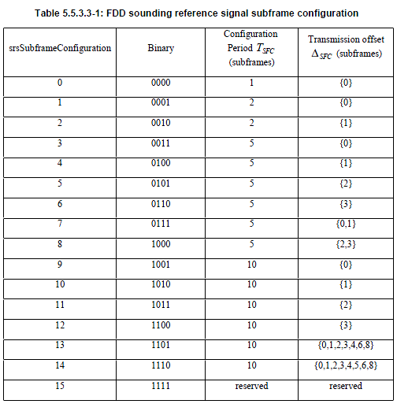
How do we know from the table above, which subframe should transmit SRS or which subframe should not ? It is determined by the following rule.

ns here means subframe number.
For example, if we chose subframe configuration 7, T_SFC become 5 and Delta_SFC become {0,1}. According to this, the SRS Status on each subframe become as follows.
|
Subframe Number (ns) |
Floor[ns/2] mod T_SFC |
SRS Status |
|
0 |
Floor[0/2] mod 5 = 0 |
The result is a member of {0,1}, so SRS is ON |
|
1 |
Floor[1/2] mod 5 = 1 |
The result is a member of {0,1}, so SRS is ON |
|
2 |
Floor[2/2] mod 5 = 2 |
The result is not a member of {0,1}, so SRS is OFF |
|
3 |
Floor[3/2] mod 5 = 3 |
The result is not a member of {0,1}, so SRS is OFF |
|
4 |
Floor[4/2] mod 5 = 4 |
The result is not a member of {0,1}, so SRS is OFF |
|
5 |
Floor[5/2] mod 5 = 0 |
The result is a member of {0,1}, so SRS is ON |
|
6 |
Floor[6/2] mod 5 = 1 |
The result is a member of {0,1}, so SRS is ON |
|
7 |
Floor[7/2] mod 5 = 2 |
The result is not a member of {0,1}, so SRS is OFF |
|
8 |
Floor[8/2] mod 5 = 3 |
The result is not a member of {0,1}, so SRS is OFF |
|
9 |
Floor[9/2] mod 5 = 4 |
The result is not a member of {0,1}, so SRS is OFF |
Following is an example frame structure showing the SRS transmission determined by the above table. (In this example, System BW = 5 Mhz, Start RB = 5, Number of RB = 15)
For srs-ConfigIndex, please refer to the following table from 36.213.
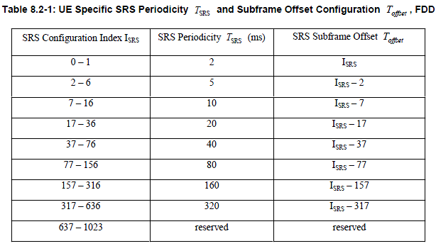
For the following parameters, refer to 36.211 5.5.3.2 Mapping to physical resources.
- srs-Bandwidth
- srs-HoppingBandwidth
- freqDomainPosition
One thing to notice that there is no flag for "srs-Hopping ON or OFF", but according to the specification (if I understood it correctly) we can figure "srs-Hopping ON or OFF" indirectly by combining the following two parameters.
srs-HoppingBandwidth >= srs-Bandwidth : SRS Hopping OFF
srs-HoppingBandwidth < srs-Bandwidth : SRS Hopping ON
You can skip following part if you are not realy, realy interested and it would be almost impossible to understand all of details unless you are implementing (programing) this process and test it. To be honest, I haven't tried program this part on my own, so I may not understand the details to the very bottom line. But I reorganized 36.211, 36.213 according to my own thought process and try to understand at least which parameters are involved in the process and how the RRC message parameter get involved in this low layer sequence generation.
SRS is also a kind of Zadoff Chu sequence. So the first step is to create a proper sequence for SRS and this process is pretty simple as follows.
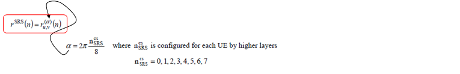
Next step is to allocate the sequence data into each of resource elements which is reserved for carrying SRS. This process is real tricky one and most of SRS parameters are involved in this resource element mapping process. (enjoy !!! -:)

If you read through the 36.211, you would notice that many of these parameters are coming from higher layer. Following is the higher layer message and I associated each of the information elements to the parameters you saw in previous process.

Unfortunately most of parameters related in SRS creation/resource allocation is hard to visualize, but there are at least a couple of parameters that can be visualized as follows.
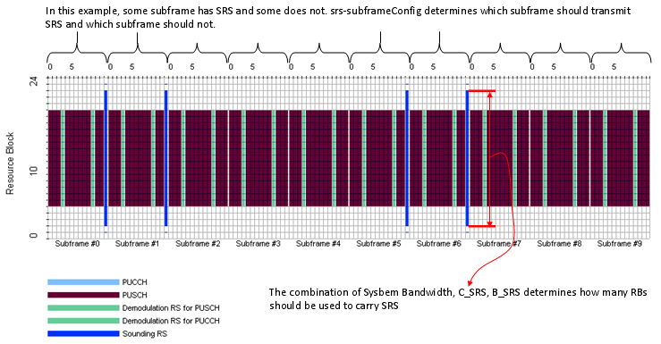
Once Common SRS and Dedicated SRS are configured, UE has to determine whether it transmit Normal PUSCH or Shortened PUSCH everytime it try to send PUSCH. Following example would help you understand the decision making criteria.

For further details, refer to the following references.
- 36.331, SoundingRS-UL-Config
- 36.211 5.5.3 Sounding reference signal
- 36.213 8.2 UE sounding procedure
SRVCC(Single Radio Voice Call Continuity)
SRVCC stands for Single Radio Voice Call Continuity. Putting it simple, it is a Handover technology between "VoIP over IMS in LTE" and Voice Call (CS) in a legacy system (e.g, WCDMA). It means it is for Handover between a Packet call in LTE and a Circuit Call in a legacy system (WCDMA).
The simplest use model can be illustrated as in < Case 1 > of the following figure showing the SRVCC between LTE and UMTS (The detailed mechanism would vary depending on what kind of legacy technology is involved). A little bit complicated use-model can be illustrated as in < Case 2 >. In < Case 2 >, user is doing VoIP while he is using another packet transaction (e.g, email, browsing etc). In this case, the radio bearer on WCDMA side should be a multiple Radio Bearer (CS + PS). There may be many different type of use model as well.

Overall procedure of SRVCC can be illustrated as follows. This is not the exact message sequence. This is just to give you a big picture of the flow. The exact sequence flow would vary depending on what kind of legacy technology gets involved.

Then you may ask "Why do we need this kind of technology when we already have Voice implementation in our LTE Network ?".
Let's think about this kind of situation.
A network operator has UMTS network covering all of its territory and it just started deploying LTE. But LTE deployment is not complete yet to cover the whole territory. Now a subscriber started voice call via IMS in the area with LTE network. And the it starts moving out of the LTE coverage. What would happen ? If the simplest possibility would be that the call would drop. But if the area is still strongly covered by a UMTS network, you can have another option than dropping the call. If you can hand the voice call over to the UMTS network, you can maintain the call even when you get out of the LTE network. This is a major motivation for SRVCC. Of course, different network opertor may have different motivation.
See Timing Sync Process in LTE Basic Procedure page.
Synchronization Signal (Primary and Secondary)
i) Each cell transmit one of 162 unique sequences on its secondary sync channel (each bit sequence is 62 bit sequence)
ii) The seconday Sync code is one of three unique sequence (62 bit Zadd-off chu sequence) which is carried by Primay Sync
iii) So total number of ID become 162 x 3 = 504
For the location of Sync signals in downlink frame structure, see Downlink Frame Structure page.
Following table is from 36.331 7.3 Timers (Informative)
|
Timer |
Start |
Stop |
At expiry |
| T300 | Transmission of RRCConnectionRequest | Reception of RRCConnectionSetup or RRCConnectionReject message, cell re-selection and upon abortion of connection establishment by upper layers | Perform the actions as specified in 5.3.3.6 |
| T301 | Transmission of RRCConnectionReestabilshmentRequest | Reception of RRCConnectionReestablishment or RRCConnectionReestablishmentReject message as well as when the selected cell becomes unsuitable | Go to RRC_IDLE |
| T302 | Reception of RRCConnectionReject while performing RRC connection establishment | Upon entering RRC_CONNECTED and upon cell re-selection | Inform upper layers about barring alleviation as specified in 5.3.3.7 |
| T303 | Access barred while performing RRC connection establishment for mobile originating calls | Upon entering RRC_CONNECTED and upon cell re-selection | Inform upper layers about barring alleviation as specified in 5.3.3.7 |
| T304 | Reception of RRCConnectionReconfiguration message including the MobilityControl Info or reception of MobilityFromEUTRACommand message including CellChangeOrder | Criterion for successful completion of handover to EUTRA or cell change order is met (the criterion is specified in the target RAT in case of inter-RAT) | In case of cell change order from E-UTRA or intra E-UTRA handover, initiate the RRCconnection re-establishment procedure; In case of handover to E-UTRA, perform the actions defined in the specifications applicable for the source RAT. |
| T305 | Access barred while performing RRCconnection establishment for mobile originating signalling | Upon entering RRC_CONNECTED and upon cell re-selection | Inform upper layers about barring alleviation as specified in 5.3.3.7 |
| T310 | Upon detecting physical layer problems i.e. upon receiving N310 consecutive out-of-sync indications from lower layers | Upon receiving N311 consecutive in-sync indications from lower layers, upon triggering the handover procedure and upon initiating the connection re-establishment procedure |
If security is not activated: go to RRC_IDLE else: initiate the connection re-establishment procedure |
| T311 | Upon initiating the RRCconnection reestablishmentmprocedure | Selection of a suitable E-UTRA cell or a cell using another RAT. | Enter RRC_IDLE |
| T320 | Upon receiving t320 or upon cell (re)selection to E-UTRA from another RAT with validity time configured for dedicated priorities (in which case the remaining validity time is applied). | Upon entering RRC_CONNECTED, when PLMN selection is performed on request by NAS, or upon cell (re)selection to another RAT (in which case the timer is carried on to the other RAT). | Discard the cell reselection priority information provided by dedicated signalling. |
| T321 | Upon receiving measConfig including a reportConfig with the purpose set to reportCGI | Upon acquiring the information needed to set all fields of cellGlobalId for the requested cell, upon receiving measConfig that includes removal of the reportConfig with the purpose set to reportCGI | Initiate the measurement reporting procedure, stop performing the related measurements and remove the corresponding measId |
Timer (EPS Mobile Management - UE Side)
Following table comes from 24.301 - 10.2 Timers of EPS mobility management (Table 10.2.1: EPS mobility management timers UE side)
|
TIMER |
TIMER |
STATE |
CAUSE OF START |
NORMAL STOP |
ON |
| T3402 | Default
12 min. NOTE 1 |
EMM
DEREGISTERED EMM REGISTERED |
At
attach failure and the attempt counter is equal to 5. At tracking area updating failure and the attempt counter is equal to 5. |
ATTACH REQUEST sent TRACKING AREA UPDATE REQUEST sent | Initiation of the attach procedure or TAU procedure |
| T3410 | 15s | EMMREGISTEREDINITIATED | ATTACH REQUEST sent | ATTACH
ACCEPT received ATTACH REJECT received |
Start T3411 or T3402 as described in subclause 5.5.1.2.6 |
| T3411 | 10s | EMM
DEREGISTERED. ATTEMPTING TO-ATTACH EMM REGISTERED. ATTEMPTING TO-UPDATE |
At
attach failure due to lower layer failure, T3410 timeout or attach rejected with other EMM cause values than those treated in subclause 5.5.1.2.5. At tracking area updating failure due to lower layer failure, T3430 timeout or TAU rejected with other EMM cause values than those treated in subclause 5.5.3.2.5. |
ATTACH
REQUEST sent TRACKING AREA UPDATE REQUEST sent |
Retransmission of the ATTACH REQUEST or TRACKING AREA UPDATE REQUEST |
| T3412 | Default
54 min. NOTE 2 NOTE 5 |
EMM REGISTERED | In
EMM-REGISTERED, when EMM-CONNECTED mode is left. |
When
entering state EMM DEREGISTERED or when entering EMM-CONNECTED mode. |
Initiation of the periodic TAU procedure |
| T3416 | 30s |
EMM
REGISTERED INITIATED EMM-SERVICE REQUEST INITIATED |
RAND and RES stored as a result of a UMTS authentication challenge | SECURITY
MODE COMMAND received SERVICE REJECT received TRACKING AREA UPDATE ACCEPT received AUTHENTICATION REJECT received AUTHENTICATION FAILURE sent EMM DEREGISTERED or EMM-NULL entered |
Delete the stored RAND and RES |
| T3417 | 5s | EMM-SERVICEREQUESTINITIATED | SERVICE
REQUEST sent EXTENDED SERVICE REQUEST sent in case f and g in subclause 5.6.1.1 |
Bearers
have been set up SERVICE REJECT received |
Abort the procedure |
| T3417ext | 10s | EMM-SERVICEREQUESTINITIATED | EXTENDED
SERVICE REQUEST sent in case d in subclause 5.6.1.1 EXTENDED SERVICE REQUEST sent in case e in subclause 5.6.1.1 and the CSFB response was set to "CS fallback accepted by the UE" |
Inter-system
change from S1 mode to A/Gb mode or Iu mode is completed Inter-system change from S1 mode to A/Gb mode or Iu mode is failed SERVICE REJECT received |
Abort the procedure |
| T3418 | 20s | EMM
REGISTEREDINITIATED EMM REGISTERED EMM-TRACKINGARE AUPDATINGINITIATED EMM DEREGISTEREDINITIATED EMM-SERVICEREQUESTINITIATED |
AUTHENTICATION
FAILURE (EMM cause = #20 "MAC failure" or #26 "non-EPS authentication unacceptable") sent |
AUTHENTICATION REQUEST received | On first expiry, the UE should consider the network as false |
| T3420 | 15s | EMM
REGISTERED INITIATED EMM REGISTERED EMM DEREGISTERED INITIATED EMM-TRACKINGAREA UPDATING INITIATED EMM-SERVICE REQUEST INITIATED |
AUTHENTICATION FAILURE (cause = #21 "synch failure") sent | AUTHENTICATION REQUEST received | On first expiry, the UE should consider the network as false |
| T3421 | 15s | EMM DEREGISTERED INITIATED | DETACH REQUEST sent | DETACH ACCEPT received | Retransmission of DETACH REQUEST |
| T3423 | NOTE 3 | EMM REGISTERED | T3412
expires while the UE is in EMM-REGISTERED.NO-CELLAVAILABLE and ISR is activated. |
When
entering state EMM DEREGISTERED or when entering EMM-CONNECTED mode. |
Set TIN to "P-TMSI" |
| T3430 | 15s | EMM-TRACKING AREA UPDATING INITIATED | TRACKING
AREA UPDATE REQUEST sent |
TRACKING
AREA UPDATE ACCEPT received TRACKING AREA UPDATE REJECT received |
Start T3411 or T3402 as described in subclause 5.5.3.2.6 |
| T3440 | 10s | EMM
REGISTERED INITIATED EMM-TRACKING AREA UPDATING INITIATED EMM DEREGISTERED INITIATED EMM-SERVICE REQUEST INITIATED EMM REGISTERED |
ATTACH
REJECT, DETACH REQUEST, TRACKING AREA UPDATE REJECT with any of the EMM cause #11, #12, #13, #14 or #15 SERVICE REJECT received with any of the EMM cause #11,#12, #13 or #15 TRACKING AREA UPDATE ACCEPT received after the UE sent TRACKING AREA UPDATE REQUEST in EMMIDLE mode with no "active" flag |
Signalling
connection released Bearers have been set up |
Release
the signalling connection and proceed as described in subclause 5.3.1.2 |
| T3442 | NOTE 4 | EMM REGISTERED | SERVICE REJECT received with EMM cause #39 "CS domain temporarily not available" | TRACKING AREA UPDATE REQUEST sent | None |
| Note 1 | The default value of this timer is used if the network does not indicate another value in an EMM signalling procedure. | ||||
| Note 2 | The value of this timer is provided by the network operator during the attach and tracking area updating procedures. (This Timer value is set in Attach Accept message as well). | ||||
| Note 3 | The value of this timer may be provided by the network in the ATTACH ACCEPT message and TRACKING AREA UPDATE ACCEPT message. The default value of this timer is identical to the value of T3412. | ||||
| Note 4 | The value of this timer is provided by the network operator when a service request for CS fallback is rejected by the network with EMM cause #39 "CS domain temporarily not available". | ||||
| Note 5 |
The default value of this timer is used if the network does not indicate a value in the TRACKING AREA UPDATE ACCEPT message and the UE does not have a stored value for this timer. (This Timer value is set in Attach Accept message as well). |
||||
Timer (EPS Mobile Management - NW Side)
Following table comes from 24.301 - 10.2 Timers of EPS mobility management (Table 10.2.2: EPS mobility management timers Network side)
| TIMER NUM. |
TIMER VALUE |
STATE | CAUSE OF START | NORMAL STOP | ON THE 1st, 2nd, 3rd, 4th EXPIRY (NOTE 1) |
| T3413 | NOTE 2 | EMM REGISTERED | Paging procedure for EPS services initiated | Paging procedure for EPS services completed | Network dependent |
| T3422 | 6s | EMM DEREGISTERED INITIATED | DETACH REQUEST sent | DETACH ACCEPT received | Retransmission of DETACH REQUEST |
| T3450 | 6s | EMM-COMMON PROC-INIT | ATTACH ACCEPT sent TRACKING AREA UPDATE ACCEPT sent with GUTI TRACKING AREA UPDATE ACCEPT sent with TMSI GUTI REALLOCATION COMMAND sent |
ATTACH COMPLETE
received TRACKING AREA UPDATE COMPLETE received GUTI REALLOCATION COMPLETE received |
Retransmission of the same message type, i.e. ATTACH ACCEPT,TRACKING AREA UPDATE ACCEPT or GUTI REALLOCATION COMMAND |
| T3460 | 6s | EMM-COMMON PROC-INIT | AUTHENTICATION
REQUEST sent SECURITY MODE COMMAND sent |
AUTHENTICATION
RESPONSE received AUTHENTICATION FAILURE received SECURITY MODE COMPLETE received SECURITY MODE REJECT received |
Retransmission of the same message type, i.e.AUTHENTICATION REQUEST or SECURITY MODE COMMAND |
| T3470 | 6s | EMM-COMMON PROC-INIT | IDENTITY REQUEST sent | IDENTITY RESPONSE received | Retransmission of IDENTITY REQUEST |
| Mobile reachable |
Default 4 min greater than T3412 | All except EMM DEREGISTERED | Entering EMM-IDLE mode | NAS signalling connection established | Network dependent, but typically paging is halted on 1st expiry |
| Implicit detach timer |
NOTE 3 | All except EMM DEREGISTERED | The
mobile reachable timer expires while the network is in EMM-IDLE mode |
NAS signalling connection established | Implicitly detach the UE on 1st expiry |
| NOTE 1: | Typically, the procedures are aborted on the fifth expiry of the relevant timer. Exceptions are described in the corresponding procedure description. | ||||
| NOTE 2: | The value of this timer is network dependent. | ||||
| NOTE 3: | The value of this timer is network dependent. If ISR is activated, the default value of this timer is 4 minutes greater than T3423. | ||||
Timer & Constants and RRC/NAS Message
|
Timer |
Message that Carreirs the Timer |
|
T300 T301 T310 T311 N310 N311 |
SIB2 |
|
T3402 T3412 T3423 |
Attach Accept, Tracking Arrea Update Accept |
Timing Advance is a MAC CE that is used to control Uplink signal transmission timing. Network (eNodeB in this case) keep measuring the time difference between PUSCH/PUCCH/SRS reception and the subframe time and can send a 'Timing Advance' command to UE to change the PUSCH/PUCCH transmission to make it better aligned with the subframe timing at the network side. If PUSCH/PUCCH/SRS arrives at the network too early, network send a Timing Advance command to UE saying "Transmit your signal a little bit late", If PUSCH/PUCCH/SRS arrives at the network too late, network send a Timing Advance command to UE saying "Transmit your signal a little bit early".
MAC PDU for Timing Advance is as follows. It is one byte data and the first two bits are reserved and set to be always 0. The remaining 6 bits carries Timing Advance command value ranging from 0 to 63.
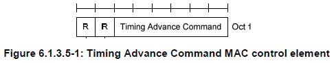
Then how to translate each value of TA(Timing Advance) value to physical 'time' delay or advance value. It is described in detail in 36.213 4.2.3 Transmission timing adjustments. Simply put, the UL transmit timing is controlled by following equation.
UL Transmission Time = (UL Transmittion Time for Previous subframe) + (TA value - 31) x 16 samples.
, where 1 sample is about 0.033 us and 16 samples is about 0.52 us.
By this calcuation, you can see that the maximum timing change by single TA value (0 or 63) is about 16.7 us (I hope my calculation is right. please let me know if this calculation is wrong).
Throughput Calculation Example
If you know the MCS index, you can calculate the throughput for that specific MCS idex as follows:
Calculation Procedure for downlink(PDSCH) is as follows :
i) refer to TS36.213 Table 7.1.7.1-1
ii) get I_TBS for using MCS value (ex, I_TBS is 21 if MCS is 23)
iii) refer to TS36.213 Table7.1.7.2.1
iv) go to column header indicating the number of RB
v) go to row header 21 which is I_TBS
vi) you would get 51024 (if the number of RB is 100 and I_TBS is 21)
vii) (This is Transfer Block Size per 1 ms for one Antenna)
If we use 2 antenna, it is 51024 bits * 2 Antenna * 1000 ms = about 100 Mbps
Calculation Procedure for uplink(PUSCH) is as follows :
Same as the downlink as above except that you have to refer to 36.213 Table 8.6.1-1 at step i)
Uplink Analysis Paremeter Calculation
Click here for TS 36.213 Tables for TBS
Tracking Area is a logical concept of an area where a user can move around without updating the MME. The network allocates a list with one or more TAs to the user. In certain operation modes, the UE may move freely in all TAs of the list without updating the MME. You can think of 'Tracking Area' as 'Routing Area' in UMTS.
Each eNobe broadcasts a special tracking area code (TAC) to indicate to which Tracking Area the eNodeB belong to and the TAC is unique within a PLMN. (Since PLMN is a unique number allocated to each of the system operator and TAC is a unique in a PLMN, if you combine these two numbers you would have a globally unique number. This number (PLMN + TAC) is called Tracking Area Identity (TAI)
Tracking Area for each eNodeB is broadcast by SIB1 as follows.
+-c1 ::= CHOICE [systemInformationBlockType1]
+-systemInformationBlockType1 ::= SEQUENCE [000]
+-cellAccessRelatedInfo ::= SEQUENCE [0]
| +-plmn-IdentityList ::= SEQUENCE OF SIZE(1..6) [1]
| | +-PLMN-IdentityInfo ::= SEQUENCE
| | +-plmn-Identity ::= SEQUENCE [1]
| | | +-mcc ::= SEQUENCE OF SIZE(3) OPTIONAL:Exist
| | | | +-MCC-MNC-Digit ::= INTEGER (0..9) [0]
| | | | +-MCC-MNC-Digit ::= INTEGER (0..9) [0]
| | | | +-MCC-MNC-Digit ::= INTEGER (0..9) [1]
| | | +-mnc ::= SEQUENCE OF SIZE(2..3) [2]
| | | +-MCC-MNC-Digit ::= INTEGER (0..9) [0]
| | | +-MCC-MNC-Digit ::= INTEGER (0..9) [1]
| | +-cellReservedForOperatorUse ::= ENUMERATED [notReserved]
| +-trackingAreaCode ::= BIT STRING SIZE(16) [0000000000000001]
| +-cellIdentity ::= BIT STRING SIZE(28) [0000000000000000000100000000]
UE stores a group of TAC and this group of TAC maintained in a UE is called Tracking Area List. UE does not need to go through Tracking Area Update procedure when it moves along this TAI.
Why we need this kind of grouping, called Tracking Area ?
What would happen if we didn't do a good job in Tracking Area Design ?
What UE is supposed to do when it move from a Tracking Area to another Tracking Area ?
These are some of the questions you have to find answers. (I will talk about these later in somewhere else)
In LTE, usually they use multiple Antenna for downlink (at least up to Category 3 UE) meaning that eNode (Network) has use multiple Tx Antenna and UE use multiple Rx antenna.
Now you almost automatically think about 'MIMO', but in reality 'multiple antenna' does not automatically mean 'MIMO'. For example, you have two downlink antenna. You can use these two antenna in various ways. Of course, one ways is to use it as 2 x 2 MIMO, but this is not the only way. You can use the two antenna in diversity configuration rather than MIMO configuration. Or you can just use only one of the antenna and sometimes you would like to use various different multiplexing, precoding methods etc.
A good summary of each Transmission Mode can be as following table from 36.213.
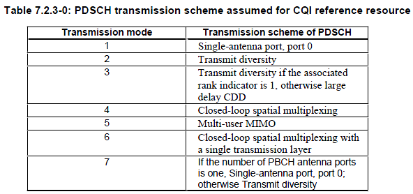
Considering these various possibilities, 3GPP provides several predefined transmission methods and this transmission method is called 'Transmission Mode'. For now, there are seven predefined predefined transmission mode as shown in the following table (TS 36.213)

To understand very details of each transmission mode requires almost complete knowledge of physical layer processing. Three important blocks in physical layer to determin the transmission mode can be illustrated as follows. You will find many different ways from the data input (left most arrow) through the final antenna ports (rightmost arrows). Each transmission mode determin which path the input data should follow through.
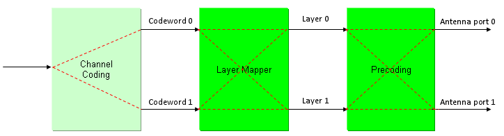
Some important parameter sets for each transmission mode are as follows. (To understad this process in detail, it is crucial to understand details of Precoding in basic procedure page).
|
TM |
No of Codewords |
No of Layers |
Precoding |
Codebook |
No of Antenna |
|
TM1 |
1 |
1 |
36.211 6.3.4.1 a single antenna port |
N/A |
1 |
|
TM2 |
1 |
2 |
36.211 6.3.4.3 Transmit diversity |
N/A |
2 |
|
TM3 |
1 |
2 |
36.211 6.3.4.3 Transmit diversity |
N/A |
2 |
|
2 |
2 |
36.211 6.3.4.2.2 Large delay CDD |
Fixed. 36.211 6.3.4.2.3 Table 6.3.4.2.3-1 {Number of layers, Codebook index} = {2, 0} |
||
|
TM4 |
1 |
2 |
36.211 6.3.4.2.1 without CDD |
36.211 6.3.4.2.3 Table 6.3.4.2.3-1 {Number of layers, Codebook index} = {1, 0} or {1, 1} or {1, 2} or {1, 3} |
2 |
|
2 |
2 |
36.211 6.3.4.2.1 without CDD |
36.211 6.3.4.2.3 Table 6.3.4.2.3-1 {Number of layers, Codebook index} = {2, 1} or {2, 2} |
||
|
TM5 |
1 |
2(cell specific) |
36.211 6.3.4.3 Transmit diversity |
N/A |
2 |
|
2 |
36.211 6.3.4.2.1 without CDD |
36.211 6.3.4.2.3 Table 6.3.4.2.3-1 {Number of layers, Codebook index} = {1, 0} or {1, 1} or {1, 2} or {1, 3} |
|||
|
TM6 |
1 |
2 |
36.211 6.3.4.2.1 without CDD |
36.211 6.3.4.2.1 without CDD |
2 |
|
TM7 |
1 |
2(cell specific) |
36.211 6.3.4.3 Transmit diversity |
N/A |
1 |
|
1 |
36.211 6.3.4.1 a single antenna port |
N/A |
|||
|
TM8 |
1 |
1 |
36.211 6.3.4.1 a single antenna port |
N/A |
2 |
|
2(cell specific) |
36.211 6.3.4.3 Transmit diversity |
N/A |
|||
|
2 |
2 |
36.211 6.3.4.4 Spatal multiplexing with UE-specific RS |
N/A |

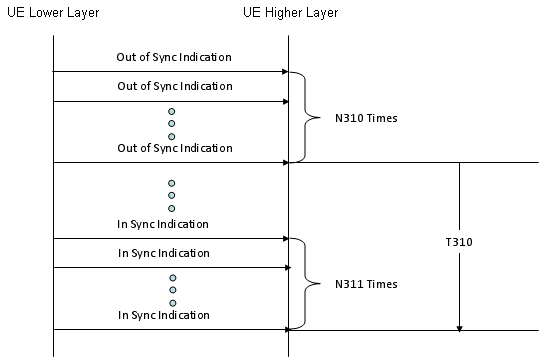
Note 1 : one "Out of Sync Indication" in this diagram means "20 subframes of consecutive PDCCH decoding failure.
Note 2 : one "In Sync Indication" in this diagram means "10 subframes of consecutive PDCCH decoding success.
UCI (Uplink Control Information)
UCI stands for Uplink Control Information. It is carried by PUCCH or PUSCH. It may remind you of DCI which is carried by PDCCH. Yes, UCI is the counter part of DCI, but the information/role of UCI is very small comparing to DCI ( I think).
The information carried by UCI is mainly following three
- SR (Scheduling Request)
- HARQ ACK/NACK
- CQI
UE transmit a certain combination of these three information depending on situation. Sometimes it carries only SR, sometimes SR and HARQ ACK/NACK together etc.
There are two channels that can carry the UCI. Sometimes PDCCH carries UCI and sometimes PUSCH carries it.
Then when PUSCH carries UCI and when PDCCH carries it ?
36.213 section 10.1 UE procedure for determining physical uplink control channel assignment describe it as follows :
Uplink control information (UCI) in subframe n shall be transmitted
- on PUCCH using format 1/1a/1b or 2/2a/2b if the UE is not transmitting on PUSCH in subframe n
- on PUSCH if the UE is transmitting on PUSCH in subframe n unless the PUSCH transmission corresponds to a
Random Access Response Grant or a retransmission of the same transport block as part of the contention based
random access procedure, in which case UCI is not transmitted
Simply put, when UE transmit the user data and it has to use PUSCH. In this case PUCCH is not allowed to be transmitted, in this case PUSCH carries UCI. When there is no user data to be transmitted, PDCCH is transmitted carrying UCI in it.
UL Grant is a specific physicall controntrol channel information from Network (eNodeB) telling a UE "Now you can transmit data" (More accurately saying "You can transmit the data 4 ms after you got this grant").
UL Grant is another name of DCI format 0. (Many people get confused by the name of "DCI format 0". They think DCI format 0 would be some information about downlink data transmission, but keep in mind that DCI format 0 is a control information about uplink data transmission).
UL Grant (DCI format 0) carries the following information and the most important information is 'Resource Allocation' and MCS. UE should transmit the data using RBs and MCS specified in this DCI 0.
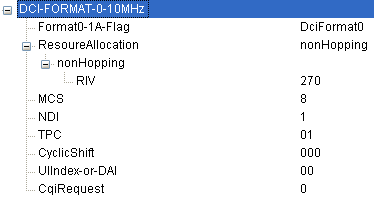
VoLTE literally stands for "Voice over LTE". But when people say "VoLTE" (in abbreviation) it usually mean "Voice over LTE utilizing IMS". (You would need to read the context to figure out what they say. Are they talking about 'general voice technology implementation over LTE' or "Voice over LTE utilizing IMS" ?)
Voice Over LTE is a collective term for any technology that enables voice call from LTE network. So everybody would mean a different specific technology when they say "Voice Over LTE".
I am listing up several technologies which are refered to most commonly.
i) CS FallBack
ii) SV LTE (Simultaneous Voice LTE)
iii) VolGA (Voice Over LTE via GAN)
iv) VoLTE
As I briefly mentioned above, this is not a single number. It is a sequence of special numbers. You can find quite a lot of materials on this sequence from internet (try with Wikipedia).
Let's first think about how this sequence is generated. Various kinds of number sequences are used in many different kind of technologies (e.g, Walsh code in CDMA, OVSF code in WCDMA) and usually these numbers are created by a special rules or formula. Same to Zadoff-Chu sequence. The basic form of Zadoff chu sequence can be created by the formula as shown in the following spreadsheet (click on the picture to see in magnified view. Please click here if you want to have this spreadsheet).
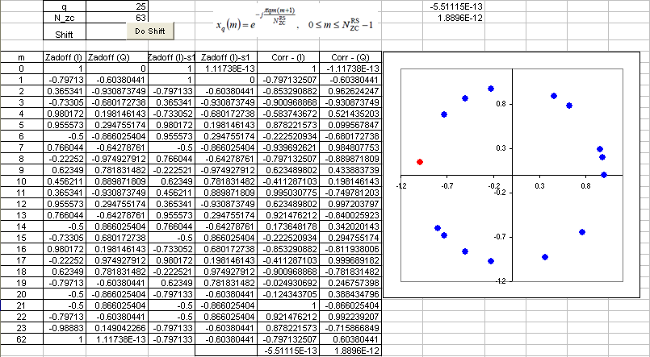
Video Tutorial : http://www.youtube.com/watch?v=xCm_1bdVwlU
Why did we chose to use these sequence ? It is because this sequence has a couple of special properties that can be very useful for LTE low layer implementation.
Followings are the special properties of the sequence :
i) This sequence has a constant amplitude. If you look into the formula, it is in the form of e^(-j theta). You may learned about this in high school math. If you convert this into Euler form, you will get e^(-j theta) = cos(theta) - j sin(theta). First, you will see this is a complex number which is made up of real and imaginary part. If you plot the numbers onto a complex plan (Real part - horizontal axis and Imaginary part on vertical axis), all the numbers will lie on the perimeter of a circle. This means the amplitude of these number is constant. See the plot above. (Column B, C is one example of Zadoff Sequence. B is the real part and C is imaginary part. The plot is the scatter plot of column B, C)
ii) Zero Autocorrelation. If you create a sequence using this formula and create another sequence just by shifting the same sequence by N (N can be 1,2,....,size of sequence -1). And if you take the correlation of the two sequence, the result become 0. Taking the spreadsheet shown above as an example, Column B,C is a sequence created by formula. and Column D,E is not the one created by the formula.. it is just shifted version of Column B, C. Cell F70 and G70 shows the correlation of Column B,C and D,E which gives almost 0. It should be 0 theoretically, but the F70,G70 is not exactly 0 because of numerical errors.. but it is almost 0. If you have two sequence of number and the correlation of the two sequence is 0, we say "the two sequences are orthogonal to each other". It means that you can create many of orthogonal sequences just by shifting a Zadoff Chu sequence. How convenient it is to create orthogonal sequences.. and you know how important to create orthogonal sequences in many wireless communication.
Any sequences that has the two properties explained above are called CAZAC sequence (constant amplitude zero autocorrelation waveform).
iii) Cross correlation of two Zadoff Chu sequence is 1/Sqrt(Nzc). If you create two sequences using the formula shown on the spreadsheet just by changing 'q' (the q value used in both sequence should be prime numbers) and take the correlation of the two sequences, the result will be 1/Sqrt(Nzc).
There are a couple of more special properties of Zadoff Chu sequences, but I don't think they are important for LTE implementation. So I would leave it to you to refer to other sources.
Where in LTE we use this Zaddoff Chu sequence. In short, the sequence are used in the following part of LTE. (I will update the details of these topics later)
i) Primary Synchronization Signal (PSS) (so called primary synchronization channel)
ii) random access preamble (PRACH)
iii) PUCCH MDRS
iv) PUSCH DMRS
v) sounding reference signals(SRS).